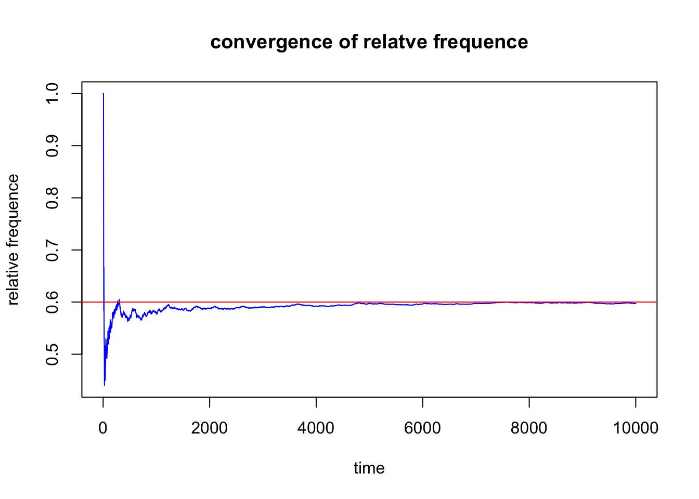

<!DOCTYPE html>
<html xmlns="http://www.w3.org/1999/xhtml" lang="en" xml:lang="en"><head>

<meta charset="utf-8">
<meta name="generator" content="quarto-1.4.555">

<meta name="viewport" content="width=device-width, initial-scale=1.0, user-scalable=yes">


<title>Foundation Math Learning - MTH113 Intro to probability and statistics+APH003–exploring world through data</title>
<style>
code{white-space: pre-wrap;}
span.smallcaps{font-variant: small-caps;}
div.columns{display: flex; gap: min(4vw, 1.5em);}
div.column{flex: auto; overflow-x: auto;}
div.hanging-indent{margin-left: 1.5em; text-indent: -1.5em;}
ul.task-list{list-style: none;}
ul.task-list li input[type="checkbox"] {
  width: 0.8em;
  margin: 0 0.8em 0.2em -1em; /* quarto-specific, see https://github.com/quarto-dev/quarto-cli/issues/4556 */ 
  vertical-align: middle;
}
/* CSS for syntax highlighting */
pre > code.sourceCode { white-space: pre; position: relative; }
pre > code.sourceCode > span { line-height: 1.25; }
pre > code.sourceCode > span:empty { height: 1.2em; }
.sourceCode { overflow: visible; }
code.sourceCode > span { color: inherit; text-decoration: inherit; }
div.sourceCode { margin: 1em 0; }
pre.sourceCode { margin: 0; }
@media screen {
div.sourceCode { overflow: auto; }
}
@media print {
pre > code.sourceCode { white-space: pre-wrap; }
pre > code.sourceCode > span { text-indent: -5em; padding-left: 5em; }
}
pre.numberSource code
  { counter-reset: source-line 0; }
pre.numberSource code > span
  { position: relative; left: -4em; counter-increment: source-line; }
pre.numberSource code > span > a:first-child::before
  { content: counter(source-line);
    position: relative; left: -1em; text-align: right; vertical-align: baseline;
    border: none; display: inline-block;
    -webkit-touch-callout: none; -webkit-user-select: none;
    -khtml-user-select: none; -moz-user-select: none;
    -ms-user-select: none; user-select: none;
    padding: 0 4px; width: 4em;
  }
pre.numberSource { margin-left: 3em;  padding-left: 4px; }
div.sourceCode
  {   }
@media screen {
pre > code.sourceCode > span > a:first-child::before { text-decoration: underline; }
}
</style>


<script src="site_libs/quarto-nav/quarto-nav.js"></script>
<script src="site_libs/quarto-nav/headroom.min.js"></script>
<script src="site_libs/clipboard/clipboard.min.js"></script>
<script src="site_libs/quarto-search/autocomplete.umd.js"></script>
<script src="site_libs/quarto-search/fuse.min.js"></script>
<script src="site_libs/quarto-search/quarto-search.js"></script>
<meta name="quarto:offset" content="./">
<script src="site_libs/quarto-html/quarto.js"></script>
<script src="site_libs/quarto-html/popper.min.js"></script>
<script src="site_libs/quarto-html/tippy.umd.min.js"></script>
<script src="site_libs/quarto-html/anchor.min.js"></script>
<link href="site_libs/quarto-html/tippy.css" rel="stylesheet">
<link href="site_libs/quarto-html/quarto-syntax-highlighting.css" rel="stylesheet" id="quarto-text-highlighting-styles">
<script src="site_libs/bootstrap/bootstrap.min.js"></script>
<link href="site_libs/bootstrap/bootstrap-icons.css" rel="stylesheet">
<link href="site_libs/bootstrap/bootstrap.min.css" rel="stylesheet" id="quarto-bootstrap" data-mode="light">
<script id="quarto-search-options" type="application/json">{
  "location": "navbar",
  "copy-button": false,
  "collapse-after": 3,
  "panel-placement": "end",
  "type": "overlay",
  "limit": 50,
  "keyboard-shortcut": [
    "f",
    "/",
    "s"
  ],
  "show-item-context": false,
  "language": {
    "search-no-results-text": "No results",
    "search-matching-documents-text": "matching documents",
    "search-copy-link-title": "Copy link to search",
    "search-hide-matches-text": "Hide additional matches",
    "search-more-match-text": "more match in this document",
    "search-more-matches-text": "more matches in this document",
    "search-clear-button-title": "Clear",
    "search-text-placeholder": "",
    "search-detached-cancel-button-title": "Cancel",
    "search-submit-button-title": "Submit",
    "search-label": "Search"
  }
}</script>

  <script src="https://polyfill.io/v3/polyfill.min.js?features=es6"></script>
  <script src="https://cdn.jsdelivr.net/npm/mathjax@3/es5/tex-chtml-full.js" type="text/javascript"></script>

<script type="text/javascript">
const typesetMath = (el) => {
  if (window.MathJax) {
    // MathJax Typeset
    window.MathJax.typeset([el]);
  } else if (window.katex) {
    // KaTeX Render
    var mathElements = el.getElementsByClassName("math");
    var macros = [];
    for (var i = 0; i < mathElements.length; i++) {
      var texText = mathElements[i].firstChild;
      if (mathElements[i].tagName == "SPAN") {
        window.katex.render(texText.data, mathElements[i], {
          displayMode: mathElements[i].classList.contains('display'),
          throwOnError: false,
          macros: macros,
          fleqn: false
        });
      }
    }
  }
}
window.Quarto = {
  typesetMath
};
</script>

</head>

<body class="nav-fixed">

<div id="quarto-search-results"></div>
  <header id="quarto-header" class="headroom fixed-top">
    <nav class="navbar navbar-expand-lg " data-bs-theme="dark">
      <div class="navbar-container container-fluid">
      <div class="navbar-brand-container mx-auto">
    <a class="navbar-brand" href="./index.html">
    <span class="navbar-title">Foundation Math Learning</span>
    </a>
  </div>
            <div id="quarto-search" class="" title="Search"></div>
          <button class="navbar-toggler" type="button" data-bs-toggle="collapse" data-bs-target="#navbarCollapse" aria-controls="navbarCollapse" aria-expanded="false" aria-label="Toggle navigation" onclick="if (window.quartoToggleHeadroom) { window.quartoToggleHeadroom(); }">
  <span class="navbar-toggler-icon"></span>
</button>
          <div class="collapse navbar-collapse" id="navbarCollapse">
            <ul class="navbar-nav navbar-nav-scroll me-auto">
  <li class="nav-item">
    <a class="nav-link" href="https://yuuuulu.github.io/"> 
<span class="menu-text">yuuuulu</span></a>
  </li>  
  <li class="nav-item">
    <a class="nav-link" href="./index.html"> 
<span class="menu-text">Homepage</span></a>
  </li>  
  <li class="nav-item">
    <a class="nav-link" href="./mth107.html"> 
<span class="menu-text">Advanced Linear Algebra</span></a>
  </li>  
  <li class="nav-item">
    <a class="nav-link" href="./Mathematical Analysis 1.html"> 
<span class="menu-text">Analysis 1</span></a>
  </li>  
  <li class="nav-item">
    <a class="nav-link active" href="./mth1113.html" aria-current="page"> 
<span class="menu-text">intro to prob, and stat.</span></a>
  </li>  
  <li class="nav-item">
    <a class="nav-link" href="./eng pde.html"> 
<span class="menu-text">PDE</span></a>
  </li>  
  <li class="nav-item">
    <a class="nav-link" href="./Calculus.html"> 
<span class="menu-text">Calculus</span></a>
  </li>  
</ul>
          </div> <!-- /navcollapse -->
          <div class="quarto-navbar-tools">
</div>
      </div> <!-- /container-fluid -->
    </nav>
</header>
<!-- content -->
<div id="quarto-content" class="quarto-container page-columns page-rows-contents page-layout-article page-navbar">
<!-- sidebar -->
<!-- margin-sidebar -->
    <div id="quarto-margin-sidebar" class="sidebar margin-sidebar">
        <nav id="TOC" role="doc-toc" class="toc-active">
    <h2 id="toc-title">On this page</h2>
   
  <ul>
  <li><a href="#十堂极简概率课-中信出版-diaconis" id="toc-十堂极简概率课-中信出版-diaconis" class="nav-link active" data-scroll-target="#十堂极简概率课-中信出版-diaconis">十堂极简概率课 中信出版 diaconis</a></li>
  <li><a href="#bivariate-data" id="toc-bivariate-data" class="nav-link" data-scroll-target="#bivariate-data">bivariate data</a></li>
  <li><a href="#linear-regression" id="toc-linear-regression" class="nav-link" data-scroll-target="#linear-regression">linear regression</a>
  <ul class="collapse">
  <li><a href="#it-is-not-stable-to-predict-the-data-outside-our-data-sample" id="toc-it-is-not-stable-to-predict-the-data-outside-our-data-sample" class="nav-link" data-scroll-target="#it-is-not-stable-to-predict-the-data-outside-our-data-sample">it is not stable to predict the data outside our data sample’</a></li>
  <li><a href="#residual-plost-should-have-no-pattern" id="toc-residual-plost-should-have-no-pattern" class="nav-link" data-scroll-target="#residual-plost-should-have-no-pattern">Residual plost should have no pattern</a></li>
  </ul></li>
  <li><a href="#skew" id="toc-skew" class="nav-link" data-scroll-target="#skew">skew</a></li>
  <li><a href="#outlier-eg-of-normal-distribution" id="toc-outlier-eg-of-normal-distribution" class="nav-link" data-scroll-target="#outlier-eg-of-normal-distribution">outlier (eg of normal distribution)</a></li>
  <li><a href="#modified-boxplot" id="toc-modified-boxplot" class="nav-link" data-scroll-target="#modified-boxplot">modified boxplot</a></li>
  <li><a href="#tutorial" id="toc-tutorial" class="nav-link" data-scroll-target="#tutorial">tutorial</a></li>
  <li><a href="#the-role-of-statistics-and-the-data-analysis-process" id="toc-the-role-of-statistics-and-the-data-analysis-process" class="nav-link" data-scroll-target="#the-role-of-statistics-and-the-data-analysis-process">The role of statistics and the Data Analysis Process</a>
  <ul class="collapse">
  <li><a href="#intro" id="toc-intro" class="nav-link" data-scroll-target="#intro">Intro</a></li>
  <li><a href="#populations-and-samples" id="toc-populations-and-samples" class="nav-link" data-scroll-target="#populations-and-samples">populations and samples</a>
  <ul class="collapse">
  <li><a href="#descriptive-stat" id="toc-descriptive-stat" class="nav-link" data-scroll-target="#descriptive-stat">descriptive stat</a></li>
  <li><a href="#inferential-stat" id="toc-inferential-stat" class="nav-link" data-scroll-target="#inferential-stat">inferential stat</a></li>
  </ul></li>
  <li><a href="#types-of-data" id="toc-types-of-data" class="nav-link" data-scroll-target="#types-of-data">Types of data</a>
  <ul class="collapse">
  <li><a href="#uni-data-set-and-bivariate-and-multivariate" id="toc-uni-data-set-and-bivariate-and-multivariate" class="nav-link" data-scroll-target="#uni-data-set-and-bivariate-and-multivariate">uni data set and bivariate and multivariate</a></li>
  <li><a href="#categorical-and-numericaldiscrete-and-continuous-with-plot-using-excel-data-analysis-or-rstudio-plot-ggplot2" id="toc-categorical-and-numericaldiscrete-and-continuous-with-plot-using-excel-data-analysis-or-rstudio-plot-ggplot2" class="nav-link" data-scroll-target="#categorical-and-numericaldiscrete-and-continuous-with-plot-using-excel-data-analysis-or-rstudio-plot-ggplot2">categorical and numerical(discrete and continuous) with plot using excel (data analysis) or rstudio plot (ggplot2)</a></li>
  </ul></li>
  <li><a href="#collect-data-sensibly" id="toc-collect-data-sensibly" class="nav-link" data-scroll-target="#collect-data-sensibly">collect data sensibly</a></li>
  </ul></li>
  <li><a href="#chapter-2" id="toc-chapter-2" class="nav-link" data-scroll-target="#chapter-2">chapter 2</a>
  <ul class="collapse">
  <li><a href="#two-types-of-studies-observational-studies-and-experiments." id="toc-two-types-of-studies-observational-studies-and-experiments." class="nav-link" data-scroll-target="#two-types-of-studies-observational-studies-and-experiments.">Two types of studies: Observational studies and Experiments.</a>
  <ul class="collapse">
  <li><a href="#observational" id="toc-observational" class="nav-link" data-scroll-target="#observational">Observational</a></li>
  <li><a href="#experiments" id="toc-experiments" class="nav-link" data-scroll-target="#experiments">Experiments</a></li>
  <li><a href="#comparison" id="toc-comparison" class="nav-link" data-scroll-target="#comparison">comparison</a></li>
  <li><a href="#confounding-vars" id="toc-confounding-vars" class="nav-link" data-scroll-target="#confounding-vars">confounding vars</a></li>
  </ul></li>
  <li><a href="#variable" id="toc-variable" class="nav-link" data-scroll-target="#variable">variable</a>
  <ul class="collapse">
  <li><a href="#response-variabley" id="toc-response-variabley" class="nav-link" data-scroll-target="#response-variabley">response variable–y</a></li>
  <li><a href="#explanotory-variablex" id="toc-explanotory-variablex" class="nav-link" data-scroll-target="#explanotory-variablex">explanotory variable–x</a></li>
  <li><a href="#experiments-and-obeservational-study" id="toc-experiments-and-obeservational-study" class="nav-link" data-scroll-target="#experiments-and-obeservational-study">experiments and obeservational study</a></li>
  <li><a href="#bias" id="toc-bias" class="nav-link" data-scroll-target="#bias">bias</a></li>
  <li><a href="#random-sampling" id="toc-random-sampling" class="nav-link" data-scroll-target="#random-sampling">random sampling</a></li>
  <li><a href="#stratified-and-cluster" id="toc-stratified-and-cluster" class="nav-link" data-scroll-target="#stratified-and-cluster">stratified and cluster</a></li>
  <li><a href="#systematic-sampling" id="toc-systematic-sampling" class="nav-link" data-scroll-target="#systematic-sampling">systematic sampling</a></li>
  </ul></li>
  </ul></li>
  <li><a href="#random-variable" id="toc-random-variable" class="nav-link" data-scroll-target="#random-variable">Random Variable</a>
  <ul class="collapse">
  <li><a href="#definition-random-variable-r.v." id="toc-definition-random-variable-r.v." class="nav-link" data-scroll-target="#definition-random-variable-r.v.">Definition: Random Variable (R.V.)</a>
  <ul class="collapse">
  <li><a href="#eg" id="toc-eg" class="nav-link" data-scroll-target="#eg">eg</a></li>
  <li><a href="#explaination" id="toc-explaination" class="nav-link" data-scroll-target="#explaination">explaination</a></li>
  </ul></li>
  <li><a href="#probability-mass-function-and-cumulative-distribution-function-for-discrete-random-variables" id="toc-probability-mass-function-and-cumulative-distribution-function-for-discrete-random-variables" class="nav-link" data-scroll-target="#probability-mass-function-and-cumulative-distribution-function-for-discrete-random-variables">Probability Mass Function and Cumulative Distribution Function for Discrete Random Variables</a></li>
  <li><a href="#expectation-and-variance-for-discrete-random-variables" id="toc-expectation-and-variance-for-discrete-random-variables" class="nav-link" data-scroll-target="#expectation-and-variance-for-discrete-random-variables">Expectation and Variance for Discrete Random Variables</a></li>
  </ul></li>
  </ul>
</nav>
    </div>
<!-- main -->
<main class="content" id="quarto-document-content">

<header id="title-block-header" class="quarto-title-block default">
<div class="quarto-title">
<h1 class="title">MTH113 Intro to probability and statistics+APH003–exploring world through data</h1>
</div>


<div class="quarto-title-meta">

    
  
    
  </div>
  


</header>


<section id="十堂极简概率课-中信出版-diaconis" class="level1">
<h1>十堂极简概率课 中信出版 diaconis</h1>
</section>
<section id="bivariate-data" class="level1">
<h1>bivariate data</h1>
</section>
<section id="linear-regression" class="level1">
<h1>linear regression</h1>
<section id="it-is-not-stable-to-predict-the-data-outside-our-data-sample" class="level2">
<h2 class="anchored" data-anchor-id="it-is-not-stable-to-predict-the-data-outside-our-data-sample">it is not stable to predict the data outside our data sample’</h2>
</section>
<section id="residual-plost-should-have-no-pattern" class="level2">
<h2 class="anchored" data-anchor-id="residual-plost-should-have-no-pattern">Residual plost should have no pattern</h2>
<p>across the whole range, it could not be showing a certain trend or a specific shape.</p>
<p>positive and negative points sperate averagely .</p>
<p></p>
<p></p>
<div class="cell">
<div class="sourceCode cell-code" id="cb1"><pre class="sourceCode r code-with-copy"><code class="sourceCode r"><span id="cb1-1"><a href="#cb1-1" aria-hidden="true" tabindex="-1"></a><span class="co"># 数据</span></span>
<span id="cb1-2"><a href="#cb1-2" aria-hidden="true" tabindex="-1"></a>x <span class="ot">&lt;-</span> <span class="fu">c</span>(<span class="dv">50</span>, <span class="dv">55</span>, <span class="dv">50</span>, <span class="dv">79</span>, <span class="dv">44</span>, <span class="dv">37</span>, <span class="dv">70</span>, <span class="dv">45</span>, <span class="dv">49</span>)  <span class="co"># Rock surface area</span></span>
<span id="cb1-3"><a href="#cb1-3" aria-hidden="true" tabindex="-1"></a>y <span class="ot">&lt;-</span> <span class="fu">c</span>(<span class="dv">152</span>, <span class="dv">48</span>, <span class="dv">22</span>, <span class="dv">35</span>, <span class="dv">38</span>, <span class="dv">171</span>, <span class="dv">13</span>, <span class="dv">185</span>, <span class="dv">25</span>)  <span class="co"># Algae colony density</span></span>
<span id="cb1-4"><a href="#cb1-4" aria-hidden="true" tabindex="-1"></a></span>
<span id="cb1-5"><a href="#cb1-5" aria-hidden="true" tabindex="-1"></a><span class="co"># (a) 计算最小二乘回归方程</span></span>
<span id="cb1-6"><a href="#cb1-6" aria-hidden="true" tabindex="-1"></a>model <span class="ot">&lt;-</span> <span class="fu">lm</span>(y <span class="sc">~</span> x)</span>
<span id="cb1-7"><a href="#cb1-7" aria-hidden="true" tabindex="-1"></a><span class="fu">summary</span>(model)</span></code><button title="Copy to Clipboard" class="code-copy-button"><i class="bi"></i></button></pre></div>
<div class="cell-output cell-output-stdout">
<pre><code>
Call:
lm(formula = y ~ x)

Residuals:
   Min     1Q Median     3Q    Max 
-65.53 -63.91 -14.47  46.99  84.39 

Coefficients:
            Estimate Std. Error t value Pr(&gt;|t|)  
(Intercept)  232.258     92.390   2.514   0.0402 *
x             -2.926      1.690  -1.731   0.1271  
---
Signif. codes:  0 '***' 0.001 '**' 0.01 '*' 0.05 '.' 0.1 ' ' 1

Residual standard error: 63.32 on 7 degrees of freedom
Multiple R-squared:  0.2998,    Adjusted R-squared:  0.1997 
F-statistic: 2.997 on 1 and 7 DF,  p-value: 0.1271</code></pre>
</div>
<div class="sourceCode cell-code" id="cb3"><pre class="sourceCode r code-with-copy"><code class="sourceCode r"><span id="cb3-1"><a href="#cb3-1" aria-hidden="true" tabindex="-1"></a><span class="co"># 获取回归系数</span></span>
<span id="cb3-2"><a href="#cb3-2" aria-hidden="true" tabindex="-1"></a>intercept <span class="ot">&lt;-</span> <span class="fu">coef</span>(model)[<span class="dv">1</span>]</span>
<span id="cb3-3"><a href="#cb3-3" aria-hidden="true" tabindex="-1"></a>slope <span class="ot">&lt;-</span> <span class="fu">coef</span>(model)[<span class="dv">2</span>]</span>
<span id="cb3-4"><a href="#cb3-4" aria-hidden="true" tabindex="-1"></a><span class="fu">cat</span>(<span class="st">"最小二乘回归方程: y ="</span>, intercept, <span class="st">"+"</span>, slope, <span class="st">"* x</span><span class="sc">\n</span><span class="st">"</span>)</span></code><button title="Copy to Clipboard" class="code-copy-button"><i class="bi"></i></button></pre></div>
<div class="cell-output cell-output-stdout">
<pre><code>最小二乘回归方程: y = 232.2575 + -2.925507 * x</code></pre>
</div>
<div class="sourceCode cell-code" id="cb5"><pre class="sourceCode r code-with-copy"><code class="sourceCode r"><span id="cb5-1"><a href="#cb5-1" aria-hidden="true" tabindex="-1"></a><span class="co"># (b) 计算 R^2 值并解释</span></span>
<span id="cb5-2"><a href="#cb5-2" aria-hidden="true" tabindex="-1"></a>r_squared <span class="ot">&lt;-</span> <span class="fu">summary</span>(model)<span class="sc">$</span>r.squared</span>
<span id="cb5-3"><a href="#cb5-3" aria-hidden="true" tabindex="-1"></a><span class="fu">cat</span>(<span class="st">"R^2 值:"</span>, r_squared, <span class="st">"</span><span class="sc">\n</span><span class="st">"</span>)</span></code><button title="Copy to Clipboard" class="code-copy-button"><i class="bi"></i></button></pre></div>
<div class="cell-output cell-output-stdout">
<pre><code>R^2 值: 0.2997552 </code></pre>
</div>
<div class="sourceCode cell-code" id="cb7"><pre class="sourceCode r code-with-copy"><code class="sourceCode r"><span id="cb7-1"><a href="#cb7-1" aria-hidden="true" tabindex="-1"></a><span class="fu">cat</span>(<span class="st">"解释: R^2 表示了"</span>, <span class="fu">round</span>(r_squared <span class="sc">*</span> <span class="dv">100</span>, <span class="dv">2</span>), <span class="st">"% 的 y 的变异可以通过 x 来解释。</span><span class="sc">\n</span><span class="st">"</span>)</span></code><button title="Copy to Clipboard" class="code-copy-button"><i class="bi"></i></button></pre></div>
<div class="cell-output cell-output-stdout">
<pre><code>解释: R^2 表示了 29.98 % 的 y 的变异可以通过 x 来解释。</code></pre>
</div>
<div class="sourceCode cell-code" id="cb9"><pre class="sourceCode r code-with-copy"><code class="sourceCode r"><span id="cb9-1"><a href="#cb9-1" aria-hidden="true" tabindex="-1"></a><span class="co"># (c) 计算残差标准误差 s_e</span></span>
<span id="cb9-2"><a href="#cb9-2" aria-hidden="true" tabindex="-1"></a>se <span class="ot">&lt;-</span> <span class="fu">summary</span>(model)<span class="sc">$</span>sigma</span>
<span id="cb9-3"><a href="#cb9-3" aria-hidden="true" tabindex="-1"></a><span class="fu">cat</span>(<span class="st">"残差标准误差 s_e:"</span>, se, <span class="st">"</span><span class="sc">\n</span><span class="st">"</span>)</span></code><button title="Copy to Clipboard" class="code-copy-button"><i class="bi"></i></button></pre></div>
<div class="cell-output cell-output-stdout">
<pre><code>残差标准误差 s_e: 63.31527 </code></pre>
</div>
<div class="sourceCode cell-code" id="cb11"><pre class="sourceCode r code-with-copy"><code class="sourceCode r"><span id="cb11-1"><a href="#cb11-1" aria-hidden="true" tabindex="-1"></a><span class="fu">cat</span>(<span class="st">"解释: s_e 表示了回归模型的平均预测误差，越小表明预测的精确度越高。</span><span class="sc">\n</span><span class="st">"</span>)</span></code><button title="Copy to Clipboard" class="code-copy-button"><i class="bi"></i></button></pre></div>
<div class="cell-output cell-output-stdout">
<pre><code>解释: s_e 表示了回归模型的平均预测误差，越小表明预测的精确度越高。</code></pre>
</div>
<div class="sourceCode cell-code" id="cb13"><pre class="sourceCode r code-with-copy"><code class="sourceCode r"><span id="cb13-1"><a href="#cb13-1" aria-hidden="true" tabindex="-1"></a><span class="co"># (d) 判断线性关系的方向和强度</span></span>
<span id="cb13-2"><a href="#cb13-2" aria-hidden="true" tabindex="-1"></a>correlation <span class="ot">&lt;-</span> <span class="fu">cor</span>(x, y)</span>
<span id="cb13-3"><a href="#cb13-3" aria-hidden="true" tabindex="-1"></a><span class="fu">cat</span>(<span class="st">"相关系数 r:"</span>, correlation, <span class="st">"</span><span class="sc">\n</span><span class="st">"</span>)</span></code><button title="Copy to Clipboard" class="code-copy-button"><i class="bi"></i></button></pre></div>
<div class="cell-output cell-output-stdout">
<pre><code>相关系数 r: -0.547499 </code></pre>
</div>
<div class="sourceCode cell-code" id="cb15"><pre class="sourceCode r code-with-copy"><code class="sourceCode r"><span id="cb15-1"><a href="#cb15-1" aria-hidden="true" tabindex="-1"></a><span class="cf">if</span> (correlation <span class="sc">&gt;</span> <span class="dv">0</span>) {</span>
<span id="cb15-2"><a href="#cb15-2" aria-hidden="true" tabindex="-1"></a>  direction <span class="ot">&lt;-</span> <span class="st">"正相关"</span></span>
<span id="cb15-3"><a href="#cb15-3" aria-hidden="true" tabindex="-1"></a>} <span class="cf">else</span> {</span>
<span id="cb15-4"><a href="#cb15-4" aria-hidden="true" tabindex="-1"></a>  direction <span class="ot">&lt;-</span> <span class="st">"负相关"</span></span>
<span id="cb15-5"><a href="#cb15-5" aria-hidden="true" tabindex="-1"></a>}</span>
<span id="cb15-6"><a href="#cb15-6" aria-hidden="true" tabindex="-1"></a></span>
<span id="cb15-7"><a href="#cb15-7" aria-hidden="true" tabindex="-1"></a><span class="cf">if</span> (<span class="fu">abs</span>(correlation) <span class="sc">&gt;</span> <span class="fl">0.7</span>) {</span>
<span id="cb15-8"><a href="#cb15-8" aria-hidden="true" tabindex="-1"></a>  strength <span class="ot">&lt;-</span> <span class="st">"强相关"</span></span>
<span id="cb15-9"><a href="#cb15-9" aria-hidden="true" tabindex="-1"></a>} <span class="cf">else</span> <span class="cf">if</span> (<span class="fu">abs</span>(correlation) <span class="sc">&gt;</span> <span class="fl">0.3</span>) {</span>
<span id="cb15-10"><a href="#cb15-10" aria-hidden="true" tabindex="-1"></a>  strength <span class="ot">&lt;-</span> <span class="st">"中等相关"</span></span>
<span id="cb15-11"><a href="#cb15-11" aria-hidden="true" tabindex="-1"></a>} <span class="cf">else</span> {</span>
<span id="cb15-12"><a href="#cb15-12" aria-hidden="true" tabindex="-1"></a>  strength <span class="ot">&lt;-</span> <span class="st">"弱相关"</span></span>
<span id="cb15-13"><a href="#cb15-13" aria-hidden="true" tabindex="-1"></a>}</span>
<span id="cb15-14"><a href="#cb15-14" aria-hidden="true" tabindex="-1"></a></span>
<span id="cb15-15"><a href="#cb15-15" aria-hidden="true" tabindex="-1"></a><span class="fu">cat</span>(<span class="st">"线性关系:"</span>, direction, <span class="st">"且为"</span>, strength, <span class="st">"</span><span class="sc">\n</span><span class="st">"</span>)</span></code><button title="Copy to Clipboard" class="code-copy-button"><i class="bi"></i></button></pre></div>
<div class="cell-output cell-output-stdout">
<pre><code>线性关系: 负相关 且为 中等相关 </code></pre>
</div>
</div>
<div class="cell">
<div class="sourceCode cell-code" id="cb17"><pre class="sourceCode r code-with-copy"><code class="sourceCode r"><span id="cb17-1"><a href="#cb17-1" aria-hidden="true" tabindex="-1"></a><span class="co"># 数据</span></span>
<span id="cb17-2"><a href="#cb17-2" aria-hidden="true" tabindex="-1"></a>quality_rating <span class="ot">&lt;-</span> <span class="fu">c</span>(<span class="dv">111</span>, <span class="dv">113</span>, <span class="dv">93</span>, <span class="dv">130</span>, <span class="dv">170</span>, <span class="dv">87</span>, <span class="dv">83</span>, <span class="dv">117</span>, <span class="dv">135</span>, <span class="dv">109</span>)</span>
<span id="cb17-3"><a href="#cb17-3" aria-hidden="true" tabindex="-1"></a>satisfaction_rating <span class="ot">&lt;-</span> <span class="fu">c</span>(<span class="dv">832</span>, <span class="dv">845</span>, <span class="dv">794</span>, <span class="dv">854</span>, <span class="dv">836</span>, <span class="dv">842</span>, <span class="dv">877</span>, <span class="dv">745</span>, <span class="dv">797</span>, <span class="dv">795</span>)</span>
<span id="cb17-4"><a href="#cb17-4" aria-hidden="true" tabindex="-1"></a></span>
<span id="cb17-5"><a href="#cb17-5" aria-hidden="true" tabindex="-1"></a><span class="co"># 计算相关系数</span></span>
<span id="cb17-6"><a href="#cb17-6" aria-hidden="true" tabindex="-1"></a>correlation_coefficient <span class="ot">&lt;-</span> <span class="fu">cor</span>(quality_rating, satisfaction_rating)</span>
<span id="cb17-7"><a href="#cb17-7" aria-hidden="true" tabindex="-1"></a><span class="fu">print</span>(<span class="fu">paste</span>(<span class="st">"相关系数 r:"</span>, correlation_coefficient))</span></code><button title="Copy to Clipboard" class="code-copy-button"><i class="bi"></i></button></pre></div>
<div class="cell-output cell-output-stdout">
<pre><code>[1] "相关系数 r: -0.115403519735578"</code></pre>
</div>
<div class="sourceCode cell-code" id="cb19"><pre class="sourceCode r code-with-copy"><code class="sourceCode r"><span id="cb19-1"><a href="#cb19-1" aria-hidden="true" tabindex="-1"></a><span class="co"># 绘制散点图</span></span>
<span id="cb19-2"><a href="#cb19-2" aria-hidden="true" tabindex="-1"></a><span class="fu">plot</span>(quality_rating, satisfaction_rating,</span>
<span id="cb19-3"><a href="#cb19-3" aria-hidden="true" tabindex="-1"></a>     <span class="at">main =</span> <span class="st">"Scatterplot of Quality Rating vs. Satisfaction Rating"</span>,</span>
<span id="cb19-4"><a href="#cb19-4" aria-hidden="true" tabindex="-1"></a>     <span class="at">xlab =</span> <span class="st">"Quality Rating"</span>,</span>
<span id="cb19-5"><a href="#cb19-5" aria-hidden="true" tabindex="-1"></a>     <span class="at">ylab =</span> <span class="st">"Satisfaction Rating"</span>,</span>
<span id="cb19-6"><a href="#cb19-6" aria-hidden="true" tabindex="-1"></a>     <span class="at">pch =</span> <span class="dv">19</span>, <span class="at">col =</span> <span class="st">"blue"</span>)</span>
<span id="cb19-7"><a href="#cb19-7" aria-hidden="true" tabindex="-1"></a><span class="fu">abline</span>(<span class="fu">lm</span>(satisfaction_rating <span class="sc">~</span> quality_rating), <span class="at">col =</span> <span class="st">"red"</span>)  <span class="co"># 添加回归线</span></span></code><button title="Copy to Clipboard" class="code-copy-button"><i class="bi"></i></button></pre></div>
<div class="cell-output-display">
<div>
<figure class="figure">
<p></p>
</figure>
</div>
</div>
</div>
</section>
</section>
<section id="skew" class="level1">
<h1>skew</h1>
<p>mean is much sensitive than the median so the outlier drags the mean to the skew…… </p>
<p></p>
<p></p>
<p></p>
<p>As long as we know the mean and standard deviation of the data, we can determine how far a certain proportion of the data falls, without knowing the specific distribution shape of the data.</p>
</section>
<section id="outlier-eg-of-normal-distribution" class="level1">
<h1>outlier (eg of normal distribution)</h1>
<p>a mild outlier if it lies more than 1.5(iqr) away from the nearest quartile (the nearest end of the box);</p>
<p>an extreme outlier if it lies more than 3(iqr) away from the nearest quartile.</p>
<p>(These definitions and distances are based on the hypothetical Normal distribution (bell shaped, symmetric, normal tails). When there is a reason to suspect that the distribution is skewed, the bounds should be changed.)</p>
</section>
<section id="modified-boxplot" class="level1">
<h1>modified boxplot</h1>
<p>A modified boxplot is a box plot where the whiskers only extend to the largest (or smallest) observation that is not an outlier and the outliers are plotted using a full circle (mild) or empty circle (extreme).</p>
<p>If there are no outliers, then the the whiskers end at the maximum (or minimum)</p>
<div class="cell">
<div class="sourceCode cell-code" id="cb20"><pre class="sourceCode r code-with-copy"><code class="sourceCode r"><span id="cb20-1"><a href="#cb20-1" aria-hidden="true" tabindex="-1"></a><span class="co"># 数据</span></span>
<span id="cb20-2"><a href="#cb20-2" aria-hidden="true" tabindex="-1"></a>ratios <span class="ot">&lt;-</span> <span class="fu">c</span>(<span class="fl">0.553</span>, <span class="fl">0.570</span>, <span class="fl">0.576</span>, <span class="fl">0.601</span>, <span class="fl">0.606</span>, <span class="fl">0.606</span>, <span class="fl">0.609</span>, <span class="fl">0.611</span>, </span>
<span id="cb20-3"><a href="#cb20-3" aria-hidden="true" tabindex="-1"></a>            <span class="fl">0.615</span>, <span class="fl">0.628</span>, <span class="fl">0.654</span>, <span class="fl">0.662</span>, <span class="fl">0.668</span>, <span class="fl">0.670</span>, <span class="fl">0.672</span>, <span class="fl">0.690</span>, </span>
<span id="cb20-4"><a href="#cb20-4" aria-hidden="true" tabindex="-1"></a>            <span class="fl">0.693</span>, <span class="fl">0.749</span>, <span class="fl">0.844</span>, <span class="fl">0.933</span>)</span>
<span id="cb20-5"><a href="#cb20-5" aria-hidden="true" tabindex="-1"></a></span>
<span id="cb20-6"><a href="#cb20-6" aria-hidden="true" tabindex="-1"></a><span class="co"># 计算四分位数、IQR、温和和极端异常值的界限</span></span>
<span id="cb20-7"><a href="#cb20-7" aria-hidden="true" tabindex="-1"></a>Q1 <span class="ot">&lt;-</span> <span class="fu">quantile</span>(ratios, <span class="fl">0.25</span>)</span>
<span id="cb20-8"><a href="#cb20-8" aria-hidden="true" tabindex="-1"></a>Q3 <span class="ot">&lt;-</span> <span class="fu">quantile</span>(ratios, <span class="fl">0.75</span>)</span>
<span id="cb20-9"><a href="#cb20-9" aria-hidden="true" tabindex="-1"></a>median_val <span class="ot">&lt;-</span> <span class="fu">median</span>(ratios)</span>
<span id="cb20-10"><a href="#cb20-10" aria-hidden="true" tabindex="-1"></a>iqr <span class="ot">&lt;-</span> Q3 <span class="sc">-</span> Q1</span>
<span id="cb20-11"><a href="#cb20-11" aria-hidden="true" tabindex="-1"></a>mild_outlier_limit <span class="ot">&lt;-</span> <span class="fl">1.5</span> <span class="sc">*</span> iqr</span>
<span id="cb20-12"><a href="#cb20-12" aria-hidden="true" tabindex="-1"></a>extreme_outlier_limit <span class="ot">&lt;-</span> <span class="dv">3</span> <span class="sc">*</span> iqr</span>
<span id="cb20-13"><a href="#cb20-13" aria-hidden="true" tabindex="-1"></a></span>
<span id="cb20-14"><a href="#cb20-14" aria-hidden="true" tabindex="-1"></a>lower_mild <span class="ot">&lt;-</span> Q1 <span class="sc">-</span> mild_outlier_limit</span>
<span id="cb20-15"><a href="#cb20-15" aria-hidden="true" tabindex="-1"></a>lower_extreme <span class="ot">&lt;-</span> Q1 <span class="sc">-</span> extreme_outlier_limit</span>
<span id="cb20-16"><a href="#cb20-16" aria-hidden="true" tabindex="-1"></a>upper_mild <span class="ot">&lt;-</span> Q3 <span class="sc">+</span> mild_outlier_limit</span>
<span id="cb20-17"><a href="#cb20-17" aria-hidden="true" tabindex="-1"></a>upper_extreme <span class="ot">&lt;-</span> Q3 <span class="sc">+</span> extreme_outlier_limit</span>
<span id="cb20-18"><a href="#cb20-18" aria-hidden="true" tabindex="-1"></a></span>
<span id="cb20-19"><a href="#cb20-19" aria-hidden="true" tabindex="-1"></a><span class="co"># 标记温和和极端异常值</span></span>
<span id="cb20-20"><a href="#cb20-20" aria-hidden="true" tabindex="-1"></a>mild_outliers <span class="ot">&lt;-</span> ratios[ratios <span class="sc">&gt;</span> upper_mild <span class="sc">&amp;</span> ratios <span class="sc">&lt;=</span> upper_extreme <span class="sc">|</span> ratios <span class="sc">&lt;</span> lower_mild <span class="sc">&amp;</span> ratios <span class="sc">&gt;=</span> lower_extreme]</span>
<span id="cb20-21"><a href="#cb20-21" aria-hidden="true" tabindex="-1"></a>extreme_outliers <span class="ot">&lt;-</span> ratios[ratios <span class="sc">&gt;</span> upper_extreme <span class="sc">|</span> ratios <span class="sc">&lt;</span> lower_extreme]</span>
<span id="cb20-22"><a href="#cb20-22" aria-hidden="true" tabindex="-1"></a></span>
<span id="cb20-23"><a href="#cb20-23" aria-hidden="true" tabindex="-1"></a><span class="co"># 绘制箱线图，并标记温和和极端异常值</span></span>
<span id="cb20-24"><a href="#cb20-24" aria-hidden="true" tabindex="-1"></a><span class="fu">boxplot</span>(ratios, <span class="at">main =</span> <span class="st">"Modified Boxplot of Width-to-Length Ratios"</span>, <span class="at">ylim =</span> <span class="fu">c</span>(<span class="fl">0.3</span>, <span class="dv">1</span>))</span>
<span id="cb20-25"><a href="#cb20-25" aria-hidden="true" tabindex="-1"></a><span class="fu">points</span>(<span class="fu">which</span>(ratios <span class="sc">%in%</span> mild_outliers), mild_outliers, <span class="at">pch =</span> <span class="dv">16</span>, <span class="at">col =</span> <span class="st">"blue"</span>)    <span class="co"># 实心圆表示温和异常值</span></span>
<span id="cb20-26"><a href="#cb20-26" aria-hidden="true" tabindex="-1"></a><span class="fu">points</span>(<span class="fu">which</span>(ratios <span class="sc">%in%</span> extreme_outliers), extreme_outliers, <span class="at">pch =</span> <span class="dv">1</span>, <span class="at">col =</span> <span class="st">"red"</span>) <span class="co"># 空心圆表示极端异常值</span></span></code><button title="Copy to Clipboard" class="code-copy-button"><i class="bi"></i></button></pre></div>
<div class="cell-output-display">
<div>
<figure class="figure">
<p></p>
</figure>
</div>
</div>
<div class="sourceCode cell-code" id="cb21"><pre class="sourceCode r code-with-copy"><code class="sourceCode r"><span id="cb21-1"><a href="#cb21-1" aria-hidden="true" tabindex="-1"></a><span class="co"># 输出四分位数、中位数和IQR结果</span></span>
<span id="cb21-2"><a href="#cb21-2" aria-hidden="true" tabindex="-1"></a></span>
<span id="cb21-3"><a href="#cb21-3" aria-hidden="true" tabindex="-1"></a><span class="co">#确定第一四分位数（Q1）：这是数据从小到大排列后，位于下四分之一位置的值，表示前25%的数据范围的最大值。</span></span>
<span id="cb21-4"><a href="#cb21-4" aria-hidden="true" tabindex="-1"></a><span class="co">#确定第三四分位数（Q3）：这是数据从小到大排列后，位于上四分之一位置的值，表示后75%的数据范围的最小值。</span></span>
<span id="cb21-5"><a href="#cb21-5" aria-hidden="true" tabindex="-1"></a></span>
<span id="cb21-6"><a href="#cb21-6" aria-hidden="true" tabindex="-1"></a><span class="fu">cat</span>(<span class="st">"Q1:"</span>, Q1, <span class="st">"</span><span class="sc">\n</span><span class="st">"</span>)</span></code><button title="Copy to Clipboard" class="code-copy-button"><i class="bi"></i></button></pre></div>
<div class="cell-output cell-output-stdout">
<pre><code>Q1: 0.606 </code></pre>
</div>
<div class="sourceCode cell-code" id="cb23"><pre class="sourceCode r code-with-copy"><code class="sourceCode r"><span id="cb23-1"><a href="#cb23-1" aria-hidden="true" tabindex="-1"></a><span class="fu">cat</span>(<span class="st">"Median:"</span>, median_val, <span class="st">"</span><span class="sc">\n</span><span class="st">"</span>)</span></code><button title="Copy to Clipboard" class="code-copy-button"><i class="bi"></i></button></pre></div>
<div class="cell-output cell-output-stdout">
<pre><code>Median: 0.641 </code></pre>
</div>
<div class="sourceCode cell-code" id="cb25"><pre class="sourceCode r code-with-copy"><code class="sourceCode r"><span id="cb25-1"><a href="#cb25-1" aria-hidden="true" tabindex="-1"></a><span class="fu">cat</span>(<span class="st">"Q3:"</span>, Q3, <span class="st">"</span><span class="sc">\n</span><span class="st">"</span>)</span></code><button title="Copy to Clipboard" class="code-copy-button"><i class="bi"></i></button></pre></div>
<div class="cell-output cell-output-stdout">
<pre><code>Q3: 0.6765 </code></pre>
</div>
<div class="sourceCode cell-code" id="cb27"><pre class="sourceCode r code-with-copy"><code class="sourceCode r"><span id="cb27-1"><a href="#cb27-1" aria-hidden="true" tabindex="-1"></a><span class="fu">cat</span>(<span class="st">"IQR:"</span>, iqr, <span class="st">"</span><span class="sc">\n</span><span class="st">"</span>)</span></code><button title="Copy to Clipboard" class="code-copy-button"><i class="bi"></i></button></pre></div>
<div class="cell-output cell-output-stdout">
<pre><code>IQR: 0.0705 </code></pre>
</div>
<div class="sourceCode cell-code" id="cb29"><pre class="sourceCode r code-with-copy"><code class="sourceCode r"><span id="cb29-1"><a href="#cb29-1" aria-hidden="true" tabindex="-1"></a><span class="fu">cat</span>(<span class="st">"Lower mild outlier limit:"</span>, lower_mild, <span class="st">"</span><span class="sc">\n</span><span class="st">"</span>)</span></code><button title="Copy to Clipboard" class="code-copy-button"><i class="bi"></i></button></pre></div>
<div class="cell-output cell-output-stdout">
<pre><code>Lower mild outlier limit: 0.50025 </code></pre>
</div>
<div class="sourceCode cell-code" id="cb31"><pre class="sourceCode r code-with-copy"><code class="sourceCode r"><span id="cb31-1"><a href="#cb31-1" aria-hidden="true" tabindex="-1"></a><span class="fu">cat</span>(<span class="st">"Lower extreme outlier limit:"</span>, lower_extreme, <span class="st">"</span><span class="sc">\n</span><span class="st">"</span>)</span></code><button title="Copy to Clipboard" class="code-copy-button"><i class="bi"></i></button></pre></div>
<div class="cell-output cell-output-stdout">
<pre><code>Lower extreme outlier limit: 0.3945 </code></pre>
</div>
<div class="sourceCode cell-code" id="cb33"><pre class="sourceCode r code-with-copy"><code class="sourceCode r"><span id="cb33-1"><a href="#cb33-1" aria-hidden="true" tabindex="-1"></a><span class="fu">cat</span>(<span class="st">"Upper mild outlier limit:"</span>, upper_mild, <span class="st">"</span><span class="sc">\n</span><span class="st">"</span>)</span></code><button title="Copy to Clipboard" class="code-copy-button"><i class="bi"></i></button></pre></div>
<div class="cell-output cell-output-stdout">
<pre><code>Upper mild outlier limit: 0.78225 </code></pre>
</div>
<div class="sourceCode cell-code" id="cb35"><pre class="sourceCode r code-with-copy"><code class="sourceCode r"><span id="cb35-1"><a href="#cb35-1" aria-hidden="true" tabindex="-1"></a><span class="fu">cat</span>(<span class="st">"Upper extreme outlier limit:"</span>, upper_extreme, <span class="st">"</span><span class="sc">\n</span><span class="st">"</span>)</span></code><button title="Copy to Clipboard" class="code-copy-button"><i class="bi"></i></button></pre></div>
<div class="cell-output cell-output-stdout">
<pre><code>Upper extreme outlier limit: 0.888 </code></pre>
</div>
</div>
<div class="cell">
<div class="sourceCode cell-code" id="cb37"><pre class="sourceCode r code-with-copy"><code class="sourceCode r"><span id="cb37-1"><a href="#cb37-1" aria-hidden="true" tabindex="-1"></a><span class="co"># 加载ggplot2包</span></span>
<span id="cb37-2"><a href="#cb37-2" aria-hidden="true" tabindex="-1"></a><span class="cf">if</span> (<span class="sc">!</span><span class="fu">require</span>(ggplot2)) <span class="fu">install.packages</span>(<span class="st">"ggplot2"</span>)</span></code><button title="Copy to Clipboard" class="code-copy-button"><i class="bi"></i></button></pre></div>
<div class="cell-output cell-output-stderr">
<pre><code>Loading required package: ggplot2</code></pre>
</div>
<div class="sourceCode cell-code" id="cb39"><pre class="sourceCode r code-with-copy"><code class="sourceCode r"><span id="cb39-1"><a href="#cb39-1" aria-hidden="true" tabindex="-1"></a><span class="fu">library</span>(ggplot2)</span>
<span id="cb39-2"><a href="#cb39-2" aria-hidden="true" tabindex="-1"></a></span>
<span id="cb39-3"><a href="#cb39-3" aria-hidden="true" tabindex="-1"></a><span class="co"># 数据</span></span>
<span id="cb39-4"><a href="#cb39-4" aria-hidden="true" tabindex="-1"></a>ratios <span class="ot">&lt;-</span> <span class="fu">c</span>(<span class="fl">0.553</span>, <span class="fl">0.570</span>, <span class="fl">0.576</span>, <span class="fl">0.601</span>, <span class="fl">0.606</span>, <span class="fl">0.606</span>, <span class="fl">0.609</span>, <span class="fl">0.611</span>, </span>
<span id="cb39-5"><a href="#cb39-5" aria-hidden="true" tabindex="-1"></a>            <span class="fl">0.615</span>, <span class="fl">0.628</span>, <span class="fl">0.654</span>, <span class="fl">0.662</span>, <span class="fl">0.668</span>, <span class="fl">0.670</span>, <span class="fl">0.672</span>, <span class="fl">0.690</span>, </span>
<span id="cb39-6"><a href="#cb39-6" aria-hidden="true" tabindex="-1"></a>            <span class="fl">0.693</span>, <span class="fl">0.749</span>, <span class="fl">0.844</span>, <span class="fl">0.933</span>)</span>
<span id="cb39-7"><a href="#cb39-7" aria-hidden="true" tabindex="-1"></a></span>
<span id="cb39-8"><a href="#cb39-8" aria-hidden="true" tabindex="-1"></a><span class="co"># 计算四分位数、IQR、温和和极端异常值的界限</span></span>
<span id="cb39-9"><a href="#cb39-9" aria-hidden="true" tabindex="-1"></a>Q1 <span class="ot">&lt;-</span> <span class="fu">quantile</span>(ratios, <span class="fl">0.25</span>)</span>
<span id="cb39-10"><a href="#cb39-10" aria-hidden="true" tabindex="-1"></a>Q3 <span class="ot">&lt;-</span> <span class="fu">quantile</span>(ratios, <span class="fl">0.75</span>)</span>
<span id="cb39-11"><a href="#cb39-11" aria-hidden="true" tabindex="-1"></a>median_val <span class="ot">&lt;-</span> <span class="fu">median</span>(ratios)</span>
<span id="cb39-12"><a href="#cb39-12" aria-hidden="true" tabindex="-1"></a>iqr <span class="ot">&lt;-</span> Q3 <span class="sc">-</span> Q1</span>
<span id="cb39-13"><a href="#cb39-13" aria-hidden="true" tabindex="-1"></a>mild_outlier_limit <span class="ot">&lt;-</span> <span class="fl">1.5</span> <span class="sc">*</span> iqr</span>
<span id="cb39-14"><a href="#cb39-14" aria-hidden="true" tabindex="-1"></a>extreme_outlier_limit <span class="ot">&lt;-</span> <span class="dv">3</span> <span class="sc">*</span> iqr</span>
<span id="cb39-15"><a href="#cb39-15" aria-hidden="true" tabindex="-1"></a></span>
<span id="cb39-16"><a href="#cb39-16" aria-hidden="true" tabindex="-1"></a>lower_mild <span class="ot">&lt;-</span> Q1 <span class="sc">-</span> mild_outlier_limit</span>
<span id="cb39-17"><a href="#cb39-17" aria-hidden="true" tabindex="-1"></a>lower_extreme <span class="ot">&lt;-</span> Q1 <span class="sc">-</span> extreme_outlier_limit</span>
<span id="cb39-18"><a href="#cb39-18" aria-hidden="true" tabindex="-1"></a>upper_mild <span class="ot">&lt;-</span> Q3 <span class="sc">+</span> mild_outlier_limit</span>
<span id="cb39-19"><a href="#cb39-19" aria-hidden="true" tabindex="-1"></a>upper_extreme <span class="ot">&lt;-</span> Q3 <span class="sc">+</span> extreme_outlier_limit</span>
<span id="cb39-20"><a href="#cb39-20" aria-hidden="true" tabindex="-1"></a></span>
<span id="cb39-21"><a href="#cb39-21" aria-hidden="true" tabindex="-1"></a><span class="co"># 标记温和和极端异常值</span></span>
<span id="cb39-22"><a href="#cb39-22" aria-hidden="true" tabindex="-1"></a>mild_outliers <span class="ot">&lt;-</span> ratios[ratios <span class="sc">&gt;</span> upper_mild <span class="sc">&amp;</span> ratios <span class="sc">&lt;=</span> upper_extreme <span class="sc">|</span> ratios <span class="sc">&lt;</span> lower_mild <span class="sc">&amp;</span> ratios <span class="sc">&gt;=</span> lower_extreme]</span>
<span id="cb39-23"><a href="#cb39-23" aria-hidden="true" tabindex="-1"></a>extreme_outliers <span class="ot">&lt;-</span> ratios[ratios <span class="sc">&gt;</span> upper_extreme <span class="sc">|</span> ratios <span class="sc">&lt;</span> lower_extreme]</span>
<span id="cb39-24"><a href="#cb39-24" aria-hidden="true" tabindex="-1"></a></span>
<span id="cb39-25"><a href="#cb39-25" aria-hidden="true" tabindex="-1"></a><span class="co"># 创建数据框</span></span>
<span id="cb39-26"><a href="#cb39-26" aria-hidden="true" tabindex="-1"></a>data <span class="ot">&lt;-</span> <span class="fu">data.frame</span>(<span class="at">ratios =</span> ratios)</span>
<span id="cb39-27"><a href="#cb39-27" aria-hidden="true" tabindex="-1"></a>data<span class="sc">$</span>outlier_type <span class="ot">&lt;-</span> <span class="fu">ifelse</span>(data<span class="sc">$</span>ratios <span class="sc">%in%</span> mild_outliers, <span class="st">"Mild Outlier"</span>,</span>
<span id="cb39-28"><a href="#cb39-28" aria-hidden="true" tabindex="-1"></a>                            <span class="fu">ifelse</span>(data<span class="sc">$</span>ratios <span class="sc">%in%</span> extreme_outliers, <span class="st">"Extreme Outlier"</span>, <span class="st">"Normal"</span>))</span>
<span id="cb39-29"><a href="#cb39-29" aria-hidden="true" tabindex="-1"></a></span>
<span id="cb39-30"><a href="#cb39-30" aria-hidden="true" tabindex="-1"></a><span class="co"># 使用ggplot2绘制</span></span>
<span id="cb39-31"><a href="#cb39-31" aria-hidden="true" tabindex="-1"></a><span class="fu">ggplot</span>(data, <span class="fu">aes</span>(<span class="at">x =</span> <span class="st">""</span>, <span class="at">y =</span> ratios)) <span class="sc">+</span></span>
<span id="cb39-32"><a href="#cb39-32" aria-hidden="true" tabindex="-1"></a>  <span class="fu">geom_boxplot</span>(<span class="at">outlier.shape =</span> <span class="cn">NA</span>, <span class="at">fill =</span> <span class="st">"lightblue"</span>) <span class="sc">+</span>  <span class="co"># 不显示默认的异常值</span></span>
<span id="cb39-33"><a href="#cb39-33" aria-hidden="true" tabindex="-1"></a>  <span class="fu">geom_point</span>(<span class="at">data =</span> <span class="fu">subset</span>(data, outlier_type <span class="sc">==</span> <span class="st">"Mild Outlier"</span>), <span class="fu">aes</span>(<span class="at">y =</span> ratios), <span class="at">color =</span> <span class="st">"blue"</span>, <span class="at">size =</span> <span class="dv">3</span>, <span class="at">shape =</span> <span class="dv">16</span>) <span class="sc">+</span> <span class="co"># 温和异常值，实心圆</span></span>
<span id="cb39-34"><a href="#cb39-34" aria-hidden="true" tabindex="-1"></a>  <span class="fu">geom_point</span>(<span class="at">data =</span> <span class="fu">subset</span>(data, outlier_type <span class="sc">==</span> <span class="st">"Extreme Outlier"</span>), <span class="fu">aes</span>(<span class="at">y =</span> ratios), <span class="at">color =</span> <span class="st">"red"</span>, <span class="at">size =</span> <span class="dv">3</span>, <span class="at">shape =</span> <span class="dv">1</span>) <span class="sc">+</span> <span class="co"># 极端异常值，空心圆</span></span>
<span id="cb39-35"><a href="#cb39-35" aria-hidden="true" tabindex="-1"></a>  <span class="fu">labs</span>(<span class="at">title =</span> <span class="st">"Modified Boxplot of Width-to-Length Ratios"</span>, <span class="at">y =</span> <span class="st">"Width-to-Length Ratios"</span>) <span class="sc">+</span></span>
<span id="cb39-36"><a href="#cb39-36" aria-hidden="true" tabindex="-1"></a>  <span class="fu">theme_minimal</span>() <span class="sc">+</span></span>
<span id="cb39-37"><a href="#cb39-37" aria-hidden="true" tabindex="-1"></a>  <span class="fu">theme</span>(<span class="at">axis.title.x =</span> <span class="fu">element_blank</span>()) <span class="sc">+</span> <span class="co"># 移除x轴标签</span></span>
<span id="cb39-38"><a href="#cb39-38" aria-hidden="true" tabindex="-1"></a>  <span class="fu">coord_cartesian</span>(<span class="at">ylim =</span> <span class="fu">c</span>(<span class="fl">0.3</span>, <span class="dv">1</span>))      <span class="co"># 设置y轴范围</span></span></code><button title="Copy to Clipboard" class="code-copy-button"><i class="bi"></i></button></pre></div>
<div class="cell-output-display">
<div>
<figure class="figure">
<p></p>
</figure>
</div>
</div>
</div>
</section>
<section id="tutorial" class="level1">
<h1>tutorial</h1>
<p>dotplot没有纵轴in r(vs scallar plot)</p>
<p>price of a textbook is discrete</p>
<p>zip code is categorical</p>
<p>dotplot and scallar plot</p>
<p>do not manipulate data—experimental</p>
<p>table 2.1</p>
<p>11</p>
<p>huge data for 顺序的 shuffle is ok</p>
<p>but ..</p>
<p>the likelihood is totally different</p>
</section>
<section id="the-role-of-statistics-and-the-data-analysis-process" class="level1">
<h1>The role of statistics and the Data Analysis Process</h1>
<section id="intro" class="level2">
<h2 class="anchored" data-anchor-id="intro">Intro</h2>
<p>stat is a large field in math involving the collection, organization, analysis,interpretation, and presentation of data(a collection of observations on one or more variables(A characteristic whose value may change from one observation to another))</p>
<p>Statistics is the scientific discipline that provides methods to help us make sense of data.</p>
<p>It is important to be able to:</p>
<p>1 Extract information from tables, charts, and graphs.</p>
<p>2 Follow numerical arguments.</p>
<p>3 Understand the basics of how data should be gathered, summarized, and analysed to draw statistical conclusions.</p>
<p>The Data Analysis Process</p>
<p>1 Understanding the nature of the research problem or goals.</p>
<p>2 Deciding what to measure and how.</p>
<p>3 Collecting data.</p>
<p>4 Data summarization and preliminary analysis.</p>
<p>5 Formal Data Analysis (Statistical Methods).</p>
<p>6 Interpretation of the results.</p>
</section>
<section id="populations-and-samples" class="level2">
<h2 class="anchored" data-anchor-id="populations-and-samples">populations and samples</h2>
<p>population: The entire collection of individuals or objects about which information is desired</p>
<p>sample: A sample is a subset of the population, selected for study.</p>
<p>then select the sample</p>
<p>then we could summarize it using 2 branches of stat.— Decriptive stat.(methods for organizing and summarizing data.) or inferential stat.(generalizing from a sample(incomplete information) to the population from which the sample was selected and assessing the reliability of such generalizations.So we run the risk(An important aspect of statistics and making statistics inferences involves quantifying the chance of making an incorrect conclusions.))</p>
<section id="descriptive-stat" class="level3">
<h3 class="anchored" data-anchor-id="descriptive-stat">descriptive stat</h3>
</section>
<section id="inferential-stat" class="level3">
<h3 class="anchored" data-anchor-id="inferential-stat">inferential stat</h3>
<p>sample</p>
</section>
</section>
<section id="types-of-data" class="level2">
<h2 class="anchored" data-anchor-id="types-of-data">Types of data</h2>
<section id="uni-data-set-and-bivariate-and-multivariate" class="level3">
<h3 class="anchored" data-anchor-id="uni-data-set-and-bivariate-and-multivariate">uni data set and bivariate and multivariate</h3>
</section>
<section id="categorical-and-numericaldiscrete-and-continuous-with-plot-using-excel-data-analysis-or-rstudio-plot-ggplot2" class="level3">
<h3 class="anchored" data-anchor-id="categorical-and-numericaldiscrete-and-continuous-with-plot-using-excel-data-analysis-or-rstudio-plot-ggplot2">categorical and numerical(discrete and continuous) with plot using excel (data analysis) or rstudio plot (ggplot2)</h3>
<p>for categorial data we could use a bar chart which is a graph of a frequency distribution for categorical data.</p>
<p>for a small numerical data we could use dotplot</p>
<ul>
<li>discrete</li>
</ul>
<div class="cell">
<div class="sourceCode cell-code" id="cb40"><pre class="sourceCode r code-with-copy"><code class="sourceCode r"><span id="cb40-1"><a href="#cb40-1" aria-hidden="true" tabindex="-1"></a><span class="fu">library</span>(ggplot2)</span>
<span id="cb40-2"><a href="#cb40-2" aria-hidden="true" tabindex="-1"></a></span>
<span id="cb40-3"><a href="#cb40-3" aria-hidden="true" tabindex="-1"></a><span class="co"># creat data：Wechat number</span></span>
<span id="cb40-4"><a href="#cb40-4" aria-hidden="true" tabindex="-1"></a>discrete_data <span class="ot">&lt;-</span> <span class="fu">data.frame</span>(<span class="at">value =</span> <span class="fu">c</span>(<span class="dv">30</span>, <span class="dv">15</span>, <span class="dv">20</span>,<span class="dv">30</span>,<span class="dv">60</span>))</span>
<span id="cb40-5"><a href="#cb40-5" aria-hidden="true" tabindex="-1"></a></span>
<span id="cb40-6"><a href="#cb40-6" aria-hidden="true" tabindex="-1"></a><span class="co"># plot</span></span>
<span id="cb40-7"><a href="#cb40-7" aria-hidden="true" tabindex="-1"></a><span class="fu">ggplot</span>(discrete_data, <span class="fu">aes</span>(<span class="at">x =</span> value)) <span class="sc">+</span></span>
<span id="cb40-8"><a href="#cb40-8" aria-hidden="true" tabindex="-1"></a>  <span class="fu">geom_dotplot</span>(<span class="at">binwidth =</span> <span class="dv">1</span>, <span class="at">dotsize =</span> <span class="dv">1</span>) <span class="sc">+</span></span>
<span id="cb40-9"><a href="#cb40-9" aria-hidden="true" tabindex="-1"></a>  <span class="fu">ggtitle</span>(<span class="st">"Dot Plot of Discrete Data (Number of Wechats)"</span>) <span class="sc">+</span></span>
<span id="cb40-10"><a href="#cb40-10" aria-hidden="true" tabindex="-1"></a>  <span class="fu">theme_minimal</span>()</span></code><button title="Copy to Clipboard" class="code-copy-button"><i class="bi"></i></button></pre></div>
<div class="cell-output-display">
<div>
<figure class="figure">
<p></p>
</figure>
</div>
</div>
</div>
<ul>
<li>continuous</li>
</ul>
<div class="cell">
<div class="sourceCode cell-code" id="cb41"><pre class="sourceCode r code-with-copy"><code class="sourceCode r"><span id="cb41-1"><a href="#cb41-1" aria-hidden="true" tabindex="-1"></a>all_athletes <span class="ot">&lt;-</span> <span class="fu">c</span>(<span class="dv">79</span>, <span class="dv">79</span>, <span class="dv">86</span>, <span class="dv">85</span>, <span class="dv">95</span>, <span class="dv">78</span>, <span class="dv">89</span>, <span class="dv">84</span>, <span class="dv">81</span>, <span class="dv">85</span>, <span class="dv">89</span>, <span class="dv">89</span>, <span class="dv">85</span>, <span class="dv">85</span>, <span class="dv">81</span>, <span class="dv">80</span>, <span class="dv">98</span>, <span class="dv">84</span>, </span>
<span id="cb41-2"><a href="#cb41-2" aria-hidden="true" tabindex="-1"></a>                  <span class="dv">80</span>, <span class="dv">82</span>, <span class="dv">81</span>, <span class="dv">70</span>, <span class="dv">85</span>, <span class="dv">87</span>, <span class="dv">83</span>, <span class="dv">86</span>, <span class="dv">92</span>, <span class="dv">85</span>, <span class="dv">93</span>, <span class="dv">94</span>, <span class="dv">76</span>, <span class="dv">69</span>, <span class="dv">82</span>, <span class="dv">80</span>, <span class="dv">94</span>, <span class="dv">98</span>)</span>
<span id="cb41-3"><a href="#cb41-3" aria-hidden="true" tabindex="-1"></a>basketball <span class="ot">&lt;-</span> <span class="fu">c</span>(<span class="dv">55</span>, <span class="dv">36</span>, <span class="dv">83</span>, <span class="dv">20</span>, <span class="dv">100</span>, <span class="dv">62</span>, <span class="dv">100</span>, <span class="dv">100</span>, <span class="dv">90</span>, <span class="dv">91</span>, <span class="dv">93</span>, <span class="dv">89</span>, <span class="dv">90</span>, <span class="dv">80</span>, <span class="dv">46</span>, <span class="dv">75</span>, <span class="dv">100</span>, <span class="dv">71</span>, </span>
<span id="cb41-4"><a href="#cb41-4" aria-hidden="true" tabindex="-1"></a>                <span class="dv">50</span>, <span class="dv">62</span>, <span class="dv">82</span>, <span class="dv">50</span>, <span class="dv">100</span>, <span class="dv">83</span>, <span class="dv">90</span>, <span class="dv">64</span>, <span class="dv">91</span>, <span class="dv">67</span>, <span class="dv">83</span>, <span class="dv">100</span>, <span class="dv">83</span>, <span class="dv">100</span>, <span class="dv">83</span>, <span class="dv">63</span>, <span class="dv">91</span>, <span class="dv">95</span>)</span>
<span id="cb41-5"><a href="#cb41-5" aria-hidden="true" tabindex="-1"></a></span>
<span id="cb41-6"><a href="#cb41-6" aria-hidden="true" tabindex="-1"></a><span class="co"># 设置画布的高度，以便将两个图绘制在同一页面上</span></span>
<span id="cb41-7"><a href="#cb41-7" aria-hidden="true" tabindex="-1"></a><span class="fu">plot.new</span>()</span>
<span id="cb41-8"><a href="#cb41-8" aria-hidden="true" tabindex="-1"></a><span class="fu">plot.window</span>(<span class="at">xlim =</span> <span class="fu">c</span>(<span class="dv">0</span>, <span class="dv">100</span>), <span class="at">ylim =</span> <span class="fu">c</span>(<span class="fl">0.5</span>, <span class="fl">2.5</span>))</span>
<span id="cb41-9"><a href="#cb41-9" aria-hidden="true" tabindex="-1"></a></span>
<span id="cb41-10"><a href="#cb41-10" aria-hidden="true" tabindex="-1"></a><span class="co"># 绘制 Basketball 数据的 dotplot</span></span>
<span id="cb41-11"><a href="#cb41-11" aria-hidden="true" tabindex="-1"></a><span class="fu">stripchart</span>(basketball, <span class="at">method =</span> <span class="st">"stack"</span>, <span class="at">at =</span> <span class="dv">2</span>, <span class="at">pch =</span> <span class="dv">16</span>, <span class="at">col =</span> <span class="st">"orange"</span>, </span>
<span id="cb41-12"><a href="#cb41-12" aria-hidden="true" tabindex="-1"></a>           <span class="at">add =</span> <span class="cn">TRUE</span>, <span class="at">offset =</span> <span class="fl">0.5</span>, <span class="at">cex =</span> <span class="fl">1.2</span>)</span>
<span id="cb41-13"><a href="#cb41-13" aria-hidden="true" tabindex="-1"></a></span>
<span id="cb41-14"><a href="#cb41-14" aria-hidden="true" tabindex="-1"></a><span class="co"># 绘制 All Athletes 数据的 dotplot</span></span>
<span id="cb41-15"><a href="#cb41-15" aria-hidden="true" tabindex="-1"></a><span class="fu">stripchart</span>(all_athletes, <span class="at">method =</span> <span class="st">"stack"</span>, <span class="at">at =</span> <span class="dv">1</span>, <span class="at">pch =</span> <span class="dv">16</span>, <span class="at">col =</span> <span class="st">"orange"</span>, </span>
<span id="cb41-16"><a href="#cb41-16" aria-hidden="true" tabindex="-1"></a>           <span class="at">add =</span> <span class="cn">TRUE</span>, <span class="at">offset =</span> <span class="fl">0.5</span>, <span class="at">cex =</span> <span class="fl">1.2</span>)</span>
<span id="cb41-17"><a href="#cb41-17" aria-hidden="true" tabindex="-1"></a></span>
<span id="cb41-18"><a href="#cb41-18" aria-hidden="true" tabindex="-1"></a><span class="co"># 添加 X 轴</span></span>
<span id="cb41-19"><a href="#cb41-19" aria-hidden="true" tabindex="-1"></a><span class="fu">axis</span>(<span class="dv">1</span>, <span class="at">at =</span> <span class="fu">seq</span>(<span class="dv">10</span>, <span class="dv">100</span>, <span class="at">by =</span> <span class="dv">10</span>), <span class="at">labels =</span> <span class="fu">seq</span>(<span class="dv">10</span>, <span class="dv">100</span>, <span class="at">by =</span> <span class="dv">10</span>))</span>
<span id="cb41-20"><a href="#cb41-20" aria-hidden="true" tabindex="-1"></a></span>
<span id="cb41-21"><a href="#cb41-21" aria-hidden="true" tabindex="-1"></a><span class="co"># 添加标签</span></span>
<span id="cb41-22"><a href="#cb41-22" aria-hidden="true" tabindex="-1"></a><span class="fu">text</span>(<span class="sc">-</span><span class="dv">5</span>, <span class="dv">2</span>, <span class="st">"Basketball"</span>, <span class="at">xpd =</span> <span class="cn">TRUE</span>, <span class="at">adj =</span> <span class="dv">1</span>)</span>
<span id="cb41-23"><a href="#cb41-23" aria-hidden="true" tabindex="-1"></a><span class="fu">text</span>(<span class="sc">-</span><span class="dv">5</span>, <span class="dv">1</span>, <span class="st">"All Athletes"</span>, <span class="at">xpd =</span> <span class="cn">TRUE</span>, <span class="at">adj =</span> <span class="dv">1</span>)</span>
<span id="cb41-24"><a href="#cb41-24" aria-hidden="true" tabindex="-1"></a></span>
<span id="cb41-25"><a href="#cb41-25" aria-hidden="true" tabindex="-1"></a><span class="co"># 添加横线</span></span>
<span id="cb41-26"><a href="#cb41-26" aria-hidden="true" tabindex="-1"></a><span class="fu">abline</span>(<span class="at">h =</span> <span class="fl">1.5</span>, <span class="at">col =</span> <span class="st">"black"</span>, <span class="at">lwd =</span> <span class="dv">2</span>)</span>
<span id="cb41-27"><a href="#cb41-27" aria-hidden="true" tabindex="-1"></a></span>
<span id="cb41-28"><a href="#cb41-28" aria-hidden="true" tabindex="-1"></a><span class="co"># 添加 X 轴标签</span></span>
<span id="cb41-29"><a href="#cb41-29" aria-hidden="true" tabindex="-1"></a><span class="fu">title</span>(<span class="at">xlab =</span> <span class="st">"Graduation rates (%)"</span>)</span></code><button title="Copy to Clipboard" class="code-copy-button"><i class="bi"></i></button></pre></div>
<div class="cell-output-display">
<div>
<figure class="figure">
<p></p>
</figure>
</div>
</div>
</div>
<div class="cell">
<div class="sourceCode cell-code" id="cb42"><pre class="sourceCode r code-with-copy"><code class="sourceCode r"><span id="cb42-1"><a href="#cb42-1" aria-hidden="true" tabindex="-1"></a><span class="co"># creat data--time spent in minutes</span></span>
<span id="cb42-2"><a href="#cb42-2" aria-hidden="true" tabindex="-1"></a>continuous_data <span class="ot">&lt;-</span> <span class="fu">data.frame</span>(<span class="at">value =</span> <span class="fu">c</span>(<span class="dv">6</span>, <span class="fl">5.25</span>, <span class="fl">3.62</span>,<span class="dv">1</span>,<span class="dv">2</span>,<span class="fl">3.1</span>,<span class="fl">3.2</span>,<span class="dv">4</span>,<span class="dv">5</span>,<span class="dv">6</span>,<span class="dv">7</span>,<span class="dv">4</span>,<span class="dv">10</span>))</span>
<span id="cb42-3"><a href="#cb42-3" aria-hidden="true" tabindex="-1"></a></span>
<span id="cb42-4"><a href="#cb42-4" aria-hidden="true" tabindex="-1"></a><span class="co"># dotplot</span></span>
<span id="cb42-5"><a href="#cb42-5" aria-hidden="true" tabindex="-1"></a><span class="fu">ggplot</span>(continuous_data, <span class="fu">aes</span>(<span class="at">x =</span> value)) <span class="sc">+</span></span>
<span id="cb42-6"><a href="#cb42-6" aria-hidden="true" tabindex="-1"></a>  <span class="fu">geom_dotplot</span>(<span class="at">binwidth =</span> <span class="fl">0.1</span>, <span class="at">dotsize =</span> <span class="dv">1</span>) <span class="sc">+</span></span>
<span id="cb42-7"><a href="#cb42-7" aria-hidden="true" tabindex="-1"></a>  <span class="fu">ggtitle</span>(<span class="st">"Dot Plot of Continuous Data (Time Spent in Minutes)"</span>) <span class="sc">+</span></span>
<span id="cb42-8"><a href="#cb42-8" aria-hidden="true" tabindex="-1"></a>  <span class="fu">theme_minimal</span>()</span></code><button title="Copy to Clipboard" class="code-copy-button"><i class="bi"></i></button></pre></div>
<div class="cell-output-display">
<div>
<figure class="figure">
<p></p>
</figure>
</div>
</div>
</div>
<div class="cell">
<div class="sourceCode cell-code" id="cb43"><pre class="sourceCode r code-with-copy"><code class="sourceCode r"><span id="cb43-1"><a href="#cb43-1" aria-hidden="true" tabindex="-1"></a><span class="fu">library</span>(ggplot2)</span>
<span id="cb43-2"><a href="#cb43-2" aria-hidden="true" tabindex="-1"></a></span>
<span id="cb43-3"><a href="#cb43-3" aria-hidden="true" tabindex="-1"></a><span class="co"># 毕业率数据</span></span>
<span id="cb43-4"><a href="#cb43-4" aria-hidden="true" tabindex="-1"></a>school <span class="ot">&lt;-</span> <span class="dv">33</span><span class="sc">:</span><span class="dv">68</span></span>
<span id="cb43-5"><a href="#cb43-5" aria-hidden="true" tabindex="-1"></a>all_athletes <span class="ot">&lt;-</span> <span class="fu">c</span>(<span class="dv">79</span>, <span class="dv">79</span>, <span class="dv">86</span>, <span class="dv">85</span>, <span class="dv">95</span>, <span class="dv">78</span>, <span class="dv">89</span>, <span class="dv">84</span>, <span class="dv">81</span>, <span class="dv">85</span>, <span class="dv">89</span>, <span class="dv">89</span>, <span class="dv">85</span>, <span class="dv">85</span>, <span class="dv">81</span>, <span class="dv">80</span>, <span class="dv">98</span>, <span class="dv">84</span>, </span>
<span id="cb43-6"><a href="#cb43-6" aria-hidden="true" tabindex="-1"></a>                  <span class="dv">80</span>, <span class="dv">82</span>, <span class="dv">81</span>, <span class="dv">70</span>, <span class="dv">85</span>, <span class="dv">87</span>, <span class="dv">83</span>, <span class="dv">86</span>, <span class="dv">92</span>, <span class="dv">85</span>, <span class="dv">93</span>, <span class="dv">94</span>, <span class="dv">76</span>, <span class="dv">69</span>, <span class="dv">82</span>, <span class="dv">80</span>, <span class="dv">94</span>, <span class="dv">98</span>)</span>
<span id="cb43-7"><a href="#cb43-7" aria-hidden="true" tabindex="-1"></a>basketball <span class="ot">&lt;-</span> <span class="fu">c</span>(<span class="dv">55</span>, <span class="dv">36</span>, <span class="dv">83</span>, <span class="dv">20</span>, <span class="dv">100</span>, <span class="dv">62</span>, <span class="dv">100</span>, <span class="dv">100</span>, <span class="dv">90</span>, <span class="dv">91</span>, <span class="dv">93</span>, <span class="dv">89</span>, <span class="dv">90</span>, <span class="dv">80</span>, <span class="dv">46</span>, <span class="dv">75</span>, <span class="dv">100</span>, <span class="dv">71</span>, </span>
<span id="cb43-8"><a href="#cb43-8" aria-hidden="true" tabindex="-1"></a>                <span class="dv">50</span>, <span class="dv">62</span>, <span class="dv">82</span>, <span class="dv">50</span>, <span class="dv">100</span>, <span class="dv">83</span>, <span class="dv">90</span>, <span class="dv">64</span>, <span class="dv">91</span>, <span class="dv">67</span>, <span class="dv">83</span>, <span class="dv">100</span>, <span class="dv">83</span>, <span class="dv">100</span>, <span class="dv">83</span>, <span class="dv">63</span>, <span class="dv">91</span>, <span class="dv">95</span>)</span>
<span id="cb43-9"><a href="#cb43-9" aria-hidden="true" tabindex="-1"></a></span>
<span id="cb43-10"><a href="#cb43-10" aria-hidden="true" tabindex="-1"></a><span class="co"># 创建数据框</span></span>
<span id="cb43-11"><a href="#cb43-11" aria-hidden="true" tabindex="-1"></a>data <span class="ot">&lt;-</span> <span class="fu">data.frame</span>(school, all_athletes, basketball)</span>
<span id="cb43-12"><a href="#cb43-12" aria-hidden="true" tabindex="-1"></a></span>
<span id="cb43-13"><a href="#cb43-13" aria-hidden="true" tabindex="-1"></a><span class="co"># 画图</span></span>
<span id="cb43-14"><a href="#cb43-14" aria-hidden="true" tabindex="-1"></a><span class="fu">ggplot</span>() <span class="sc">+</span></span>
<span id="cb43-15"><a href="#cb43-15" aria-hidden="true" tabindex="-1"></a>  <span class="fu">geom_dotplot</span>(<span class="at">data =</span> data, <span class="fu">aes</span>(<span class="at">x =</span> all_athletes, <span class="at">y =</span> <span class="st">"All Athletes"</span>), <span class="at">binaxis =</span> <span class="st">'x'</span>, <span class="at">stackdir =</span> <span class="st">'up'</span>, <span class="at">dotsize =</span> <span class="fl">0.5</span>) <span class="sc">+</span></span>
<span id="cb43-16"><a href="#cb43-16" aria-hidden="true" tabindex="-1"></a>  <span class="fu">geom_dotplot</span>(<span class="at">data =</span> data, <span class="fu">aes</span>(<span class="at">x =</span> basketball, <span class="at">y =</span> <span class="st">"Basketball"</span>), <span class="at">binaxis =</span> <span class="st">'x'</span>, <span class="at">stackdir =</span> <span class="st">'up'</span>, <span class="at">dotsize =</span> <span class="fl">0.5</span>, <span class="at">color =</span> <span class="st">"red"</span>) <span class="sc">+</span></span>
<span id="cb43-17"><a href="#cb43-17" aria-hidden="true" tabindex="-1"></a>  <span class="fu">xlab</span>(<span class="st">"Graduation rates (%)"</span>) <span class="sc">+</span></span>
<span id="cb43-18"><a href="#cb43-18" aria-hidden="true" tabindex="-1"></a>  <span class="fu">ylab</span>(<span class="st">""</span>) <span class="sc">+</span></span>
<span id="cb43-19"><a href="#cb43-19" aria-hidden="true" tabindex="-1"></a>  <span class="fu">theme_minimal</span>() <span class="sc">+</span></span>
<span id="cb43-20"><a href="#cb43-20" aria-hidden="true" tabindex="-1"></a>  <span class="fu">ggtitle</span>(<span class="st">"Dotplot of Graduation Rates for All Athletes and Basketball Players"</span>)</span></code><button title="Copy to Clipboard" class="code-copy-button"><i class="bi"></i></button></pre></div>
<div class="cell-output cell-output-stderr">
<pre><code>Bin width defaults to 1/30 of the range of the data. Pick better value with
`binwidth`.
Bin width defaults to 1/30 of the range of the data. Pick better value with
`binwidth`.</code></pre>
</div>
<div class="cell-output-display">
<div>
<figure class="figure">
<p></p>
</figure>
</div>
</div>
</div>
<div class="quarto-figure quarto-figure-center">
<figure class="figure">
<p></p>
<figcaption>histogram excel plot</figcaption>
</figure>
</div>
</section>
</section>
<section id="collect-data-sensibly" class="level2">
<h2 class="anchored" data-anchor-id="collect-data-sensibly">collect data sensibly</h2>
</section>
</section>
<section id="chapter-2" class="level1">
<h1>chapter 2</h1>
<section id="two-types-of-studies-observational-studies-and-experiments." class="level2">
<h2 class="anchored" data-anchor-id="two-types-of-studies-observational-studies-and-experiments.">Two types of studies: Observational studies and Experiments.</h2>
<section id="observational" class="level3">
<h3 class="anchored" data-anchor-id="observational">Observational</h3>
<p>A study in which the investigator observes characteristics of a sample selected from one or more existing populations. The goal is to draw conclusions about the corresponding population or about differences between two or more populations.</p>
<p>In an observational study, it is impossible to draw clear cause-and-effect conclusions</p>
</section>
<section id="experiments" class="level3">
<h3 class="anchored" data-anchor-id="experiments">Experiments</h3>
<p>A study in which the investigator observes how a response variable behaves when one or more explanatory variables, also called factors, are manipulated.</p>
<p>A well-designed experiment can result in data that provide evidence for a cause-and-effect relationship.</p>
<p></p>
<ul>
<li>Experimental conditions: Any particular combination of values for the explanatory variables, which are also called treatments.</li>
</ul>
</section>
<section id="comparison" class="level3">
<h3 class="anchored" data-anchor-id="comparison">comparison</h3>
<ul>
<li><p>Both observational studies and experiments can be used to compare groups, but in an experiment the researcher controls who is in which group, whereas this is not the case in an observational study.</p></li>
<li><p>In an observational study, it is impossible to draw clear cause-andeffect conclusions</p></li>
</ul>
</section>
<section id="confounding-vars" class="level3">
<h3 class="anchored" data-anchor-id="confounding-vars">confounding vars</h3>
<p>A variable that is related to both how the experimental groups were formed and the response variable of interest.</p>
<ul>
<li><p>Two methods for data collection: Sampling and Experimentation.</p></li>
<li><p>distinguish between selection bias, measurement or response bias, and non-response bias.</p></li>
<li><p>select a simple random sample from a given population.</p></li>
<li><p>distinguish between simple random sampling, stratified random sampling, cluster sampling, systematic sampling, and convenience sampling</p></li>
</ul>
</section>
</section>
<section id="variable" class="level2">
<h2 class="anchored" data-anchor-id="variable">variable</h2>
<section id="response-variabley" class="level3">
<h3 class="anchored" data-anchor-id="response-variabley">response variable–y</h3>
<p>The response variable is the focus of a question in a study or experiment.</p>
</section>
<section id="explanotory-variablex" class="level3">
<h3 class="anchored" data-anchor-id="explanotory-variablex">explanotory variable–x</h3>
<p>An explanatory variable is one that explains for changes in the response variable.</p>
</section>
<section id="experiments-and-obeservational-study" class="level3">
<h3 class="anchored" data-anchor-id="experiments-and-obeservational-study">experiments and obeservational study</h3>
</section>
<section id="bias" class="level3">
<h3 class="anchored" data-anchor-id="bias">bias</h3>
<p>selection bias：When the way the sample is selected systematically excludes some part of the population of interest.</p>
<p>measurement or response bias</p>
<p>eg: survey question/scale(The scale or a machine used for measurements is not calibrated properly)</p>
<p>Non-response Bias:When responses are not obtained from all individuals selected for inclusion in the sample.</p>
<p>non-response bias can distort results if those who respond differ in important ways from those who do not respond (e.g.&nbsp;laziness a confounding variable).</p>
</section>
<section id="random-sampling" class="level3">
<h3 class="anchored" data-anchor-id="random-sampling">random sampling</h3>
<p>def: A sample that is selected from a population in a way that ensures that every different possible sample of size n has the same chance of being selected.</p>
<p>the same chance to be selected</p>
<p>counter eg:</p>
<p>Consider 100 students in a classroom, 60 females and 40 males. If we randomly sample 6 females, and 4 males, then each female has a 6/60 = 0.1 chance of being selected. Same for males, 4/40=0.1. However, not every group of 10 students is equally likely to be selected. This is not simple random sampling</p>
<p>The random selection process allows us to be confident that the sample adequately reflects the population, even when the sample consists of only a small fraction of the population.</p>
<p>eg.Voting Sample Size in a country</p>
</section>
<section id="stratified-and-cluster" class="level3">
<h3 class="anchored" data-anchor-id="stratified-and-cluster">stratified and cluster</h3>
<ul>
<li>stratified random sampling:In stratified random sampling, separate simple random samples are independently selected from each subgroup. Each subgroup is called a strata.</li>
</ul>
<p>In general, it is much easier to produce relatively accurate estimates of characteristics of a homogeneous group than of a heterogeneous group.</p>
<p>stratified: according to certain characteristic</p>
<p>eg.Even with a small sample, it is possible to obtain an accurate estimate of the average grade point average (GPA) of students graduating with high honours from a university (Similar high grades, homogenous, thus only sample a few students). On the other hand, producing a reasonably accurate estimate of the average GPA of all seniors at the university, a much more diverse group of GPAs, is a more difficult task. <strong>Not only does this ensure that students at each GPA level are represented, it also allows for a more accurate estimate of the overall average GPA.</strong></p>
<ul>
<li>cluster reflect general characteristic about the whole entire population</li>
</ul>
<p>cluster: randomly groups</p>
<p>Cluster sampling involves dividing the population of interest into non-overlapping subgroups, called clusters. Clusters are then selected at random, and then all individuals in the selected clusters are included in the sample.</p>
</section>
<section id="systematic-sampling" class="level3">
<h3 class="anchored" data-anchor-id="systematic-sampling">systematic sampling</h3>
<p>A value k is specified (e.g.&nbsp;k = 50 or k = 200). Then one of the first k individuals is selected at random, after which every k-th individual in the sequence is included in the sample. A sample selected in this way is called a 1 in k systematic sample.</p>
<p>In the case of large samples, it can ensure that the sample is evenly distributed in the population.</p>
</section>
</section>
</section>
<section id="random-variable" class="level1">
<h1>Random Variable</h1>
<section id="definition-random-variable-r.v." class="level2">
<h2 class="anchored" data-anchor-id="definition-random-variable-r.v.">Definition: Random Variable (R.V.)</h2>
<p>A numerical variable whose value depends on the outcome of a chance experiment. A random variable associates a numerical value with each outcome of a chance experiment.(Think of it as a rule that translates each result of a chance event into a number.)</p>
<p>A real-valued random variable X is a function</p>
<p>X : S → <span class="math inline">\(\mathbb R\)</span>, where S is the sample space of a chance experiment.</p>
<p>Discrete random variable: A random variable is discrete if its set of possible value is a collection of isolated points along the number line.(counting)</p>
<p>Continuous random variable: A random variable is continuous if its set of possible values includes an entire interval on the number line.(measurement), which could not be count.</p>
<section id="eg" class="level3">
<h3 class="anchored" data-anchor-id="eg">eg</h3>
<p>Examples: Coin Tossing (Discrete Random Variable) If we flip a coin 5 times, let X be the number of heads we get. Possible values of X {0,1,2,3,4,5} (where 0 means no heads, and 5 means all heads). Here, X turns each outcome of multiple coin tosses into a count of heads. Departure Time (Continuous Random Variable) Imagine tracking when people leave a subway station between 10 PM and 11 PM. Let Y represent the time (in hours) someone leaves, so Y can be any number from 10 to 11. Here, Y assigns each departure time to a point in the range [10,11].</p>
</section>
<section id="explaination" class="level3">
<h3 class="anchored" data-anchor-id="explaination">explaination</h3>
<p>In short:</p>
<p>Random variables convert random events into numbers. Discrete random variables take specific values (like counting heads). Continuous random variables take any value in a range (like time).</p>
<ul>
<li>Multiple variables</li>
</ul>
</section>
</section>
<section id="probability-mass-function-and-cumulative-distribution-function-for-discrete-random-variables" class="level2">
<h2 class="anchored" data-anchor-id="probability-mass-function-and-cumulative-distribution-function-for-discrete-random-variables">Probability Mass Function and Cumulative Distribution Function for Discrete Random Variables</h2>
<p>Probability Mass Function (PMF): <span class="math inline">\(p_x (x) := P(X = x) ,\forall x\)</span></p>
<p>Cumulative Distribution Function (CDF): <span class="math inline">\(F_x (x) := P(X \leq x) ,\forall x\)</span></p>
<div class="cell">
<div class="sourceCode cell-code" id="cb45"><pre class="sourceCode r code-with-copy"><code class="sourceCode r"><span id="cb45-1"><a href="#cb45-1" aria-hidden="true" tabindex="-1"></a><span class="co"># 定义每个事件的概率和对应的 X 值</span></span>
<span id="cb45-2"><a href="#cb45-2" aria-hidden="true" tabindex="-1"></a>outcomes <span class="ot">&lt;-</span> <span class="fu">c</span>(<span class="st">"GGGG"</span>, <span class="st">"EGGG"</span>, <span class="st">"GEGG"</span>, <span class="st">"GGEG"</span>, <span class="st">"GGGE"</span>, </span>
<span id="cb45-3"><a href="#cb45-3" aria-hidden="true" tabindex="-1"></a>              <span class="st">"EEGG"</span>, <span class="st">"EGEG"</span>, <span class="st">"EGGE"</span>, <span class="st">"GEEG"</span>, <span class="st">"GEGE"</span>, </span>
<span id="cb45-4"><a href="#cb45-4" aria-hidden="true" tabindex="-1"></a>              <span class="st">"GGEE"</span>, <span class="st">"GEEE"</span>, <span class="st">"EEEG"</span>, <span class="st">"EEGE"</span>, <span class="st">"EEEE"</span>)</span>
<span id="cb45-5"><a href="#cb45-5" aria-hidden="true" tabindex="-1"></a>probabilities <span class="ot">&lt;-</span> <span class="fu">c</span>(<span class="fl">0.1296</span>, <span class="fl">0.0864</span>, <span class="fl">0.0864</span>, <span class="fl">0.0864</span>, <span class="fl">0.0864</span>, </span>
<span id="cb45-6"><a href="#cb45-6" aria-hidden="true" tabindex="-1"></a>                   <span class="fl">0.0576</span>, <span class="fl">0.0576</span>, <span class="fl">0.0576</span>, <span class="fl">0.0576</span>, <span class="fl">0.0576</span>, </span>
<span id="cb45-7"><a href="#cb45-7" aria-hidden="true" tabindex="-1"></a>                   <span class="fl">0.0384</span>, <span class="fl">0.0384</span>, <span class="fl">0.0384</span>, <span class="fl">0.0384</span>, <span class="fl">0.0256</span>)</span>
<span id="cb45-8"><a href="#cb45-8" aria-hidden="true" tabindex="-1"></a>X_values <span class="ot">&lt;-</span> <span class="fu">c</span>(<span class="dv">0</span>, <span class="dv">1</span>, <span class="dv">1</span>, <span class="dv">1</span>, <span class="dv">1</span>, </span>
<span id="cb45-9"><a href="#cb45-9" aria-hidden="true" tabindex="-1"></a>              <span class="dv">2</span>, <span class="dv">2</span>, <span class="dv">2</span>, <span class="dv">2</span>, <span class="dv">2</span>,</span>
<span id="cb45-10"><a href="#cb45-10" aria-hidden="true" tabindex="-1"></a>              <span class="dv">3</span>, <span class="dv">3</span>, <span class="dv">3</span>, <span class="dv">3</span>, <span class="dv">4</span>)</span>
<span id="cb45-11"><a href="#cb45-11" aria-hidden="true" tabindex="-1"></a></span>
<span id="cb45-12"><a href="#cb45-12" aria-hidden="true" tabindex="-1"></a><span class="co"># 计算每个 X 值的 PMF 通过分组和求和</span></span>
<span id="cb45-13"><a href="#cb45-13" aria-hidden="true" tabindex="-1"></a>pmf <span class="ot">&lt;-</span> <span class="fu">tapply</span>(probabilities, X_values, sum)</span>
<span id="cb45-14"><a href="#cb45-14" aria-hidden="true" tabindex="-1"></a></span>
<span id="cb45-15"><a href="#cb45-15" aria-hidden="true" tabindex="-1"></a><span class="co"># 定义可能的 X 值</span></span>
<span id="cb45-16"><a href="#cb45-16" aria-hidden="true" tabindex="-1"></a>X_values_unique <span class="ot">&lt;-</span> <span class="fu">sort</span>(<span class="fu">unique</span>(X_values))</span>
<span id="cb45-17"><a href="#cb45-17" aria-hidden="true" tabindex="-1"></a></span>
<span id="cb45-18"><a href="#cb45-18" aria-hidden="true" tabindex="-1"></a><span class="co"># 计算 CDF</span></span>
<span id="cb45-19"><a href="#cb45-19" aria-hidden="true" tabindex="-1"></a>cdf <span class="ot">&lt;-</span> <span class="fu">cumsum</span>(pmf)</span>
<span id="cb45-20"><a href="#cb45-20" aria-hidden="true" tabindex="-1"></a></span>
<span id="cb45-21"><a href="#cb45-21" aria-hidden="true" tabindex="-1"></a><span class="co"># 确保 CDF 在 x &gt; 4 时为 1</span></span>
<span id="cb45-22"><a href="#cb45-22" aria-hidden="true" tabindex="-1"></a>cdf <span class="ot">&lt;-</span> <span class="fu">c</span>(cdf, <span class="dv">1</span>)</span>
<span id="cb45-23"><a href="#cb45-23" aria-hidden="true" tabindex="-1"></a></span>
<span id="cb45-24"><a href="#cb45-24" aria-hidden="true" tabindex="-1"></a><span class="co"># 更新 X 值以包括 x &gt; 4 的情况</span></span>
<span id="cb45-25"><a href="#cb45-25" aria-hidden="true" tabindex="-1"></a>X_values_unique <span class="ot">&lt;-</span> <span class="fu">c</span>(X_values_unique, <span class="st">"&gt;4"</span>)</span>
<span id="cb45-26"><a href="#cb45-26" aria-hidden="true" tabindex="-1"></a></span>
<span id="cb45-27"><a href="#cb45-27" aria-hidden="true" tabindex="-1"></a><span class="co"># 创建数据框显示 PMF 和 CDF</span></span>
<span id="cb45-28"><a href="#cb45-28" aria-hidden="true" tabindex="-1"></a>table <span class="ot">&lt;-</span> <span class="fu">data.frame</span>(</span>
<span id="cb45-29"><a href="#cb45-29" aria-hidden="true" tabindex="-1"></a>  <span class="at">X =</span> X_values_unique,</span>
<span id="cb45-30"><a href="#cb45-30" aria-hidden="true" tabindex="-1"></a>  <span class="st">`</span><span class="at">PMF P(X=x)</span><span class="st">`</span> <span class="ot">=</span> <span class="fu">c</span>(pmf, <span class="dv">1</span><span class="fl">-0.1296-0.3456-0.2880-0.1536-0.0256</span>),  <span class="co"># PMF 没有对应的 x &gt; 4 值，填 NA</span></span>
<span id="cb45-31"><a href="#cb45-31" aria-hidden="true" tabindex="-1"></a>  <span class="st">`</span><span class="at">CDF F(X&lt;=x)</span><span class="st">`</span> <span class="ot">=</span> cdf</span>
<span id="cb45-32"><a href="#cb45-32" aria-hidden="true" tabindex="-1"></a>)</span>
<span id="cb45-33"><a href="#cb45-33" aria-hidden="true" tabindex="-1"></a></span>
<span id="cb45-34"><a href="#cb45-34" aria-hidden="true" tabindex="-1"></a><span class="co"># 打印表格</span></span>
<span id="cb45-35"><a href="#cb45-35" aria-hidden="true" tabindex="-1"></a><span class="fu">print</span>(table)</span></code><button title="Copy to Clipboard" class="code-copy-button"><i class="bi"></i></button></pre></div>
<div class="cell-output cell-output-stdout">
<pre><code>   X PMF.P.X.x. CDF.F.X..x.
0  0     0.1296      0.1296
1  1     0.3456      0.4752
2  2     0.2880      0.7632
3  3     0.1536      0.9168
4  4     0.0256      0.9424
  &gt;4     0.0576      1.0000</code></pre>
</div>
</div>
<ul>
<li>Note that the domain of a cdf is (−∞, ∞)</li>
</ul>
<p><span class="math inline">\(\mathrm{pmf} \Longrightarrow \mathrm{cdf}\)</span> <span class="math display">\[
F_x(x)=\sum_{y \leq x} p_x(y)
\]</span> cdf <span class="math inline">\(\Longrightarrow\)</span> pmf Suppose <span class="math inline">\(X\)</span> takes ordered values <span class="math inline">\(x_1, x_2, x_3, \cdots\)</span>, then <span class="math display">\[
\begin{aligned}
p_X\left(x_i\right) &amp; =P\left(X=x_i\right)=P\left(x_{i-1}&lt;X \leq x_i\right) \\
&amp; =P\left(X \leq x_i\right)-P\left(X \leq x_{i-1}\right) \\
&amp; =F\left(x_i\right)-F\left(x_{i-1}\right)
\end{aligned}
\]</span></p>
<ul>
<li>remark: The probability of a discrete distribution varies depending on the inclusion and exclusion of the boundary values.</li>
</ul>
</section>
<section id="expectation-and-variance-for-discrete-random-variables" class="level2">
<h2 class="anchored" data-anchor-id="expectation-and-variance-for-discrete-random-variables">Expectation and Variance for Discrete Random Variables</h2>
<p><span class="math display">\[
\frac{0 \cdot f_0+1 \cdot f_1+2 \cdot f_2+\cdots+n \cdot f_n}{N}=\frac{1}{N} \sum_{i=0}^n i \cdot f_i
\]</span></p>
<p>Note that in <span class="math inline">\(\frac{1}{N} \sum_{i=0}^n i \cdot f_i\)</span>, <span class="math display">\[
\lim _{N \rightarrow \infty} \frac{f_i}{N}=P(X=i)
\]</span></p>
<p>So the average number will be <span class="math display">\[
\sum_{i=0}^n i \cdot P(X=i)
\]</span></p>
<ul>
<li><p>Definition: Expectation Given a discrete random variable <span class="math inline">\(X\)</span>, the expectation of <span class="math inline">\(X\)</span> is <span class="math display">\[
E[X]=\sum_x x \cdot p_X(x)
\]</span></p></li>
<li><p>Properties of Expectation</p></li>
<li><p>If <span class="math inline">\(c\)</span> is a constant, then <span class="math inline">\(E[c]=c\)</span>.</p></li>
<li><p>If <span class="math inline">\(X \geq 0\)</span> then <span class="math inline">\(E[X] \geq 0\)</span>.</p></li>
<li><p>If <span class="math inline">\(a \leq X \leq b\)</span> then <span class="math inline">\(a \leq E[X] \leq b\)</span>.</p></li>
<li><p>Proof of 3: First show <span class="math inline">\(E[X] \geq a\)</span>, then show <span class="math inline">\(E[X] \leq b\)</span>, <span class="math display">\[
\begin{aligned}
E[X] &amp; =\sum_x x p_X(x) \geq \sum_x a p_X(x), \\
&amp; =a \sum_x p_x(x)=a .
\end{aligned}
\]</span></p></li>
</ul>
<p>Similarly, <span class="math inline">\(E[X] \leq b\)</span>.</p>
<ul>
<li><p>Suppose <span class="math inline">\(X\)</span> is a discrete random variable and <span class="math inline">\(Y=g(X)\)</span>, then <span class="math display">\[
\begin{aligned}
E[Y] &amp; =\sum_y y p_Y(y)=\sum_y y P(Y=y) \\
&amp; =\sum_y y \sum_{\{x: g(x)=y\}} P(X=x) \\
&amp; =\sum_y \sum_{\{x: g(x)=y\}} y P(X=x) \\
&amp; =\sum_y \sum_{\{x: g(x)=y\}} g(x) P(X=x) \\
&amp; =\sum_x g(x) P(X=x)
\end{aligned}
\]</span></p></li>
<li><p>First moment of <span class="math inline">\(X\)</span> (mean): <span class="math display">\[
E[X]=\sum_x x p_X(x) .
\]</span></p></li>
<li><p>Second moment of <span class="math inline">\(X\)</span> : <span class="math display">\[
E\left[X^2\right]=\sum_x x^2 p_x(x) .
\]</span></p></li>
<li><p>In general, <span class="math inline">\(E[g(X)] \neq g(E[X])\)</span>. For example, let <span class="math inline">\(g(x)=x^2\)</span>, and consider <span class="math inline">\(X\)</span> such that <span class="math display">\[
p_X(x)= \begin{cases}0.5, &amp; \text { for } x=-1 \\ 0.5, &amp; \text { for } x=1\end{cases}
\]</span></p></li>
</ul>
<p>Then clearly <span class="math inline">\(E\left[X^2\right]=1 \neq 0=(E[X])^2\)</span>.</p>
<ul>
<li><p>There are exceptions (e.g.&nbsp;when g is linear)!</p></li>
<li><p>Linearity of Expectation</p></li>
</ul>
<p>E[aX + b] = aE[X] + b</p>
<p>proof:</p>
<p>Suppose <span class="math inline">\(g(x)=a x+b\)</span>. Then <span class="math display">\[
\begin{aligned}
E[g(X)] &amp; =\sum_x g(x) p_X(x), \\
&amp; =\sum_x(a x+b) p_x(x), \\
&amp; =\sum_x a x p_x(x)+\sum_x b p_x(x), \\
&amp; =a \sum_x x p_x(x)+b \sum_x p_x(x), \\
&amp; =a E[X]+b=g(E[X]),
\end{aligned}
\]</span> this implies <span class="math display">\[
E[a X+b]=a E[X]+b
\]</span></p>
<ul>
<li>Remark: Apart from this case, always assume <span class="math inline">\(E[g(X)] \neq g(E[X])\)</span>.</li>
</ul>


</section>
</section>

</main> <!-- /main -->
<script id="quarto-html-after-body" type="application/javascript">
window.document.addEventListener("DOMContentLoaded", function (event) {
  const toggleBodyColorMode = (bsSheetEl) => {
    const mode = bsSheetEl.getAttribute("data-mode");
    const bodyEl = window.document.querySelector("body");
    if (mode === "dark") {
      bodyEl.classList.add("quarto-dark");
      bodyEl.classList.remove("quarto-light");
    } else {
      bodyEl.classList.add("quarto-light");
      bodyEl.classList.remove("quarto-dark");
    }
  }
  const toggleBodyColorPrimary = () => {
    const bsSheetEl = window.document.querySelector("link#quarto-bootstrap");
    if (bsSheetEl) {
      toggleBodyColorMode(bsSheetEl);
    }
  }
  toggleBodyColorPrimary();  
  const icon = "";
  const anchorJS = new window.AnchorJS();
  anchorJS.options = {
    placement: 'right',
    icon: icon
  };
  anchorJS.add('.anchored');
  const isCodeAnnotation = (el) => {
    for (const clz of el.classList) {
      if (clz.startsWith('code-annotation-')) {                     
        return true;
      }
    }
    return false;
  }
  const clipboard = new window.ClipboardJS('.code-copy-button', {
    text: function(trigger) {
      const codeEl = trigger.previousElementSibling.cloneNode(true);
      for (const childEl of codeEl.children) {
        if (isCodeAnnotation(childEl)) {
          childEl.remove();
        }
      }
      return codeEl.innerText;
    }
  });
  clipboard.on('success', function(e) {
    // button target
    const button = e.trigger;
    // don't keep focus
    button.blur();
    // flash "checked"
    button.classList.add('code-copy-button-checked');
    var currentTitle = button.getAttribute("title");
    button.setAttribute("title", "Copied!");
    let tooltip;
    if (window.bootstrap) {
      button.setAttribute("data-bs-toggle", "tooltip");
      button.setAttribute("data-bs-placement", "left");
      button.setAttribute("data-bs-title", "Copied!");
      tooltip = new bootstrap.Tooltip(button, 
        { trigger: "manual", 
          customClass: "code-copy-button-tooltip",
          offset: [0, -8]});
      tooltip.show();    
    }
    setTimeout(function() {
      if (tooltip) {
        tooltip.hide();
        button.removeAttribute("data-bs-title");
        button.removeAttribute("data-bs-toggle");
        button.removeAttribute("data-bs-placement");
      }
      button.setAttribute("title", currentTitle);
      button.classList.remove('code-copy-button-checked');
    }, 1000);
    // clear code selection
    e.clearSelection();
  });
    var localhostRegex = new RegExp(/^(?:http|https):\/\/localhost\:?[0-9]*\//);
    var mailtoRegex = new RegExp(/^mailto:/);
      var filterRegex = new RegExp('/' + window.location.host + '/');
    var isInternal = (href) => {
        return filterRegex.test(href) || localhostRegex.test(href) || mailtoRegex.test(href);
    }
    // Inspect non-navigation links and adorn them if external
 	var links = window.document.querySelectorAll('a[href]:not(.nav-link):not(.navbar-brand):not(.toc-action):not(.sidebar-link):not(.sidebar-item-toggle):not(.pagination-link):not(.no-external):not([aria-hidden]):not(.dropdown-item):not(.quarto-navigation-tool)');
    for (var i=0; i<links.length; i++) {
      const link = links[i];
      if (!isInternal(link.href)) {
        // undo the damage that might have been done by quarto-nav.js in the case of
        // links that we want to consider external
        if (link.dataset.originalHref !== undefined) {
          link.href = link.dataset.originalHref;
        }
      }
    }
  function tippyHover(el, contentFn, onTriggerFn, onUntriggerFn) {
    const config = {
      allowHTML: true,
      maxWidth: 500,
      delay: 100,
      arrow: false,
      appendTo: function(el) {
          return el.parentElement;
      },
      interactive: true,
      interactiveBorder: 10,
      theme: 'quarto',
      placement: 'bottom-start',
    };
    if (contentFn) {
      config.content = contentFn;
    }
    if (onTriggerFn) {
      config.onTrigger = onTriggerFn;
    }
    if (onUntriggerFn) {
      config.onUntrigger = onUntriggerFn;
    }
    window.tippy(el, config); 
  }
  const noterefs = window.document.querySelectorAll('a[role="doc-noteref"]');
  for (var i=0; i<noterefs.length; i++) {
    const ref = noterefs[i];
    tippyHover(ref, function() {
      // use id or data attribute instead here
      let href = ref.getAttribute('data-footnote-href') || ref.getAttribute('href');
      try { href = new URL(href).hash; } catch {}
      const id = href.replace(/^#\/?/, "");
      const note = window.document.getElementById(id);
      if (note) {
        return note.innerHTML;
      } else {
        return "";
      }
    });
  }
  const xrefs = window.document.querySelectorAll('a.quarto-xref');
  const processXRef = (id, note) => {
    // Strip column container classes
    const stripColumnClz = (el) => {
      el.classList.remove("page-full", "page-columns");
      if (el.children) {
        for (const child of el.children) {
          stripColumnClz(child);
        }
      }
    }
    stripColumnClz(note)
    if (id === null || id.startsWith('sec-')) {
      // Special case sections, only their first couple elements
      const container = document.createElement("div");
      if (note.children && note.children.length > 2) {
        container.appendChild(note.children[0].cloneNode(true));
        for (let i = 1; i < note.children.length; i++) {
          const child = note.children[i];
          if (child.tagName === "P" && child.innerText === "") {
            continue;
          } else {
            container.appendChild(child.cloneNode(true));
            break;
          }
        }
        if (window.Quarto?.typesetMath) {
          window.Quarto.typesetMath(container);
        }
        return container.innerHTML
      } else {
        if (window.Quarto?.typesetMath) {
          window.Quarto.typesetMath(note);
        }
        return note.innerHTML;
      }
    } else {
      // Remove any anchor links if they are present
      const anchorLink = note.querySelector('a.anchorjs-link');
      if (anchorLink) {
        anchorLink.remove();
      }
      if (window.Quarto?.typesetMath) {
        window.Quarto.typesetMath(note);
      }
      // TODO in 1.5, we should make sure this works without a callout special case
      if (note.classList.contains("callout")) {
        return note.outerHTML;
      } else {
        return note.innerHTML;
      }
    }
  }
  for (var i=0; i<xrefs.length; i++) {
    const xref = xrefs[i];
    tippyHover(xref, undefined, function(instance) {
      instance.disable();
      let url = xref.getAttribute('href');
      let hash = undefined; 
      if (url.startsWith('#')) {
        hash = url;
      } else {
        try { hash = new URL(url).hash; } catch {}
      }
      if (hash) {
        const id = hash.replace(/^#\/?/, "");
        const note = window.document.getElementById(id);
        if (note !== null) {
          try {
            const html = processXRef(id, note.cloneNode(true));
            instance.setContent(html);
          } finally {
            instance.enable();
            instance.show();
          }
        } else {
          // See if we can fetch this
          fetch(url.split('#')[0])
          .then(res => res.text())
          .then(html => {
            const parser = new DOMParser();
            const htmlDoc = parser.parseFromString(html, "text/html");
            const note = htmlDoc.getElementById(id);
            if (note !== null) {
              const html = processXRef(id, note);
              instance.setContent(html);
            } 
          }).finally(() => {
            instance.enable();
            instance.show();
          });
        }
      } else {
        // See if we can fetch a full url (with no hash to target)
        // This is a special case and we should probably do some content thinning / targeting
        fetch(url)
        .then(res => res.text())
        .then(html => {
          const parser = new DOMParser();
          const htmlDoc = parser.parseFromString(html, "text/html");
          const note = htmlDoc.querySelector('main.content');
          if (note !== null) {
            // This should only happen for chapter cross references
            // (since there is no id in the URL)
            // remove the first header
            if (note.children.length > 0 && note.children[0].tagName === "HEADER") {
              note.children[0].remove();
            }
            const html = processXRef(null, note);
            instance.setContent(html);
          } 
        }).finally(() => {
          instance.enable();
          instance.show();
        });
      }
    }, function(instance) {
    });
  }
      let selectedAnnoteEl;
      const selectorForAnnotation = ( cell, annotation) => {
        let cellAttr = 'data-code-cell="' + cell + '"';
        let lineAttr = 'data-code-annotation="' +  annotation + '"';
        const selector = 'span[' + cellAttr + '][' + lineAttr + ']';
        return selector;
      }
      const selectCodeLines = (annoteEl) => {
        const doc = window.document;
        const targetCell = annoteEl.getAttribute("data-target-cell");
        const targetAnnotation = annoteEl.getAttribute("data-target-annotation");
        const annoteSpan = window.document.querySelector(selectorForAnnotation(targetCell, targetAnnotation));
        const lines = annoteSpan.getAttribute("data-code-lines").split(",");
        const lineIds = lines.map((line) => {
          return targetCell + "-" + line;
        })
        let top = null;
        let height = null;
        let parent = null;
        if (lineIds.length > 0) {
            //compute the position of the single el (top and bottom and make a div)
            const el = window.document.getElementById(lineIds[0]);
            top = el.offsetTop;
            height = el.offsetHeight;
            parent = el.parentElement.parentElement;
          if (lineIds.length > 1) {
            const lastEl = window.document.getElementById(lineIds[lineIds.length - 1]);
            const bottom = lastEl.offsetTop + lastEl.offsetHeight;
            height = bottom - top;
          }
          if (top !== null && height !== null && parent !== null) {
            // cook up a div (if necessary) and position it 
            let div = window.document.getElementById("code-annotation-line-highlight");
            if (div === null) {
              div = window.document.createElement("div");
              div.setAttribute("id", "code-annotation-line-highlight");
              div.style.position = 'absolute';
              parent.appendChild(div);
            }
            div.style.top = top - 2 + "px";
            div.style.height = height + 4 + "px";
            div.style.left = 0;
            let gutterDiv = window.document.getElementById("code-annotation-line-highlight-gutter");
            if (gutterDiv === null) {
              gutterDiv = window.document.createElement("div");
              gutterDiv.setAttribute("id", "code-annotation-line-highlight-gutter");
              gutterDiv.style.position = 'absolute';
              const codeCell = window.document.getElementById(targetCell);
              const gutter = codeCell.querySelector('.code-annotation-gutter');
              gutter.appendChild(gutterDiv);
            }
            gutterDiv.style.top = top - 2 + "px";
            gutterDiv.style.height = height + 4 + "px";
          }
          selectedAnnoteEl = annoteEl;
        }
      };
      const unselectCodeLines = () => {
        const elementsIds = ["code-annotation-line-highlight", "code-annotation-line-highlight-gutter"];
        elementsIds.forEach((elId) => {
          const div = window.document.getElementById(elId);
          if (div) {
            div.remove();
          }
        });
        selectedAnnoteEl = undefined;
      };
        // Handle positioning of the toggle
    window.addEventListener(
      "resize",
      throttle(() => {
        elRect = undefined;
        if (selectedAnnoteEl) {
          selectCodeLines(selectedAnnoteEl);
        }
      }, 10)
    );
    function throttle(fn, ms) {
    let throttle = false;
    let timer;
      return (...args) => {
        if(!throttle) { // first call gets through
            fn.apply(this, args);
            throttle = true;
        } else { // all the others get throttled
            if(timer) clearTimeout(timer); // cancel #2
            timer = setTimeout(() => {
              fn.apply(this, args);
              timer = throttle = false;
            }, ms);
        }
      };
    }
      // Attach click handler to the DT
      const annoteDls = window.document.querySelectorAll('dt[data-target-cell]');
      for (const annoteDlNode of annoteDls) {
        annoteDlNode.addEventListener('click', (event) => {
          const clickedEl = event.target;
          if (clickedEl !== selectedAnnoteEl) {
            unselectCodeLines();
            const activeEl = window.document.querySelector('dt[data-target-cell].code-annotation-active');
            if (activeEl) {
              activeEl.classList.remove('code-annotation-active');
            }
            selectCodeLines(clickedEl);
            clickedEl.classList.add('code-annotation-active');
          } else {
            // Unselect the line
            unselectCodeLines();
            clickedEl.classList.remove('code-annotation-active');
          }
        });
      }
  const findCites = (el) => {
    const parentEl = el.parentElement;
    if (parentEl) {
      const cites = parentEl.dataset.cites;
      if (cites) {
        return {
          el,
          cites: cites.split(' ')
        };
      } else {
        return findCites(el.parentElement)
      }
    } else {
      return undefined;
    }
  };
  var bibliorefs = window.document.querySelectorAll('a[role="doc-biblioref"]');
  for (var i=0; i<bibliorefs.length; i++) {
    const ref = bibliorefs[i];
    const citeInfo = findCites(ref);
    if (citeInfo) {
      tippyHover(citeInfo.el, function() {
        var popup = window.document.createElement('div');
        citeInfo.cites.forEach(function(cite) {
          var citeDiv = window.document.createElement('div');
          citeDiv.classList.add('hanging-indent');
          citeDiv.classList.add('csl-entry');
          var biblioDiv = window.document.getElementById('ref-' + cite);
          if (biblioDiv) {
            citeDiv.innerHTML = biblioDiv.innerHTML;
          }
          popup.appendChild(citeDiv);
        });
        return popup.innerHTML;
      });
    }
  }
});
</script>
</div> <!-- /content -->


</body></html>